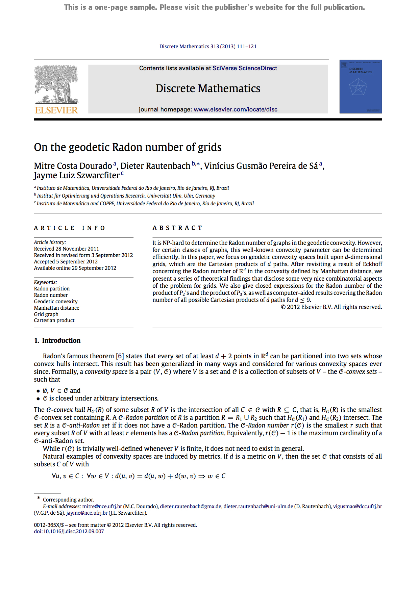

<html>

  <head>

    <script type="text/javascript" src="language.js"></script>
    <script type="text/javascript" src="abstracts.js"></script>
    <script type="text/javascript" src="reorder.js"></script>
      
    <meta http-equiv="Content-Type"
     content="text/html; charset=ISO-8859-1"><link type="text/css" rel="stylesheet"
     href="estilo.css"><title>Vin&iacute;cius Gusm&atilde;o Pereira de S&aacute;</title>

  </head> 
 
  <body onload="autoLanguage()"> 

    <h2 class="en">Vin&iacute;cius Gusm&atilde;o Pereira de S&aacute;&nbsp;  &#8212;  &nbsp;Publications</h2>
    <h2 class="pt">Vin&iacute;cius Gusm&atilde;o Pereira de S&aacute;&nbsp;  &#8212;  &nbsp;Publica&ccedil;&otilde;es</h2>
    
          <p>
        
        &nbsp;&nbsp;
        
      </p>

    <p class="en"><a href=".">Main page</a><br><br>
                  <a href="#2016">2016</a>&nbsp;&nbsp;
    			  <a href="#2015">2015</a>&nbsp;&nbsp;
                  <a href="#2014">2014</a>&nbsp;&nbsp;
                  <a href="#2013">2013</a>&nbsp;&nbsp;
                  <a href="#2012">2012</a>&nbsp;&nbsp;
                  <a href="#2011-en">Older</a><br>
                  <!--<a href="#drafts">Drafts and unpublished manuscripts</a><br>-->


    <p class="pt"><a href=".">P&aacute;gina principal</a><br><br>
                  <a href="#2016">2016</a>&nbsp;&nbsp;
                  <a href="#2015">2015</a>&nbsp;&nbsp;
                  <a href="#2014">2014</a>&nbsp;&nbsp;
                  <a href="#2013">2013</a>&nbsp;&nbsp;
                  <a href="#2012">2012</a>&nbsp;&nbsp;                
                  <a href="#2011-pt">+Antigos</a><br>
                  <!--<a href="#limbo">No limbo: rascunhos e artigos n&atilde;o publicados</a><br>-->
                  
    <p class="en"><button onclick="showAbstracts()" class="but"> Show/hide all abstracts </button>&nbsp;&nbsp;
                  <button onclick="group_by()" class="but"> Group by journal, conference, etc. </button>
    <!-- &nbsp;<button onclick="showBibs()" class="but"> Show/hide all bibs</button>-->
    </p>
    <p class="pt"><button onclick="showAbstracts()" class="but"> Mostrar/ocultar todos os abstracts </button>
                  <button onclick="group_by()" class="but"> Agrupar por peri&oacute;dico, confer&ecirc;ncia, etc. </button>
    <!-- &nbsp;<button onclick="showBibs()" class="but"> Mostrar/ocultar todos os bibs</button>-->
    </p>


    <h2 id="2016"><font color="blue">2016</font></h2>
    <ol class="reversed"> 


      <li> <a target="_blank" href="manuscripts/cyberphysical.pdf"><b>Software control and intellectual property protection in cyber-physical systems</b></a>.&nbsp;
        <a target="_blank" href="manuscripts/cyberphysical.pdf>
        </a>
        <!--<a target="_blank" href="http://arxiv.org/abs/1204.3488"></a>-->
        
        <div class="pt">Com Davidson Boccardo, Raphael Machado e Jayme Szwarcfiter.</div>
        <div class="en">With Davidson Boccardo, Raphael Machado and Jayme Szwarcfiter.</div>	
        <div class="pt"><em>EURASIP Journal on Information Security</em>. No prelo.</div>	
        <div class="en"><em>EURASIP Journal on Information Security</em>. To appear.</div>	
        <p id="cyberphysical" class="abstract">
		Software control is a critical issue in cyber-physical systems (CPS):
		if the expected behavior of the software embedded in a single device of a CPS
		cannot be enforced then the behavior of the whole CPS may be in jeopardy.
		Thus, CPS stakeholders like having some level of control over the embedded
		software. Third-party demands to control the software, however, conflict with
		the intellectual property protection demanded by software developers, since
		some level of detail about the software at hand would have to be disclosed. In
		the present paper we discuss the issue of controlling the software embedded
		in CPS devices and address the problem of how to achieve an increased level
		of software control without compromising the protection of intellectual property.
		We propose a two-party fingerprinting scheme that allows for attribution
		of responsibility in the case of intellectual property leaks. Our fingerprinting
		scheme is such that neither party may obtain an advantage over the other by
		misbehaving, misrepresenting or by prematurely aborting the protocol, therefore
		providing a fair means to resolve disputes.
         </p>
      </li>

    
     <li> <a target="_blank" href="manuscripts/GCO2016.pdf"><b>Randomized watermarks for structured programs</b></a>.&nbsp;
        <a target="_blank" href="manuscripts/GCO2016.pdf"></a>
        
        <div class="pt">Com Lucila Bento, Davidson Boccardo, Raphael Machado e Jayme Szwarcfiter.</div>
        <div class="en">With Lucila Bento, Davidson Boccardo, Raphael Machado and Jayme Szwarcfiter.</div>
        <div class="pt">Livro de abstracts do II Workshop Franco-brasileiro de Grafos e Otimiza&ccedil;&atilde;o Combinat&oacute;ria (<a href="http://www.lia.ufc.br/GCO2016/index_br.php" target="_blank">GCO'16</a>, Praia da Redonda/CE, 28/03-01/04/16)</div>	
        <div class="en">Book of abstracts of the II Workshop Franco-brasileiro de Grafos e Otimiza&ccedil;&atilde;o Combinat&oacute;ria (<a href="http://www.lia.ufc.br/GCO2016/index_br.php" target="_blank">GCO'16</a>, Praia da Redonda/CE, 28/03-01/04/16)</div>	
        <p id="gco2016" class="abstract">
             We propose a new codec for graph-based software watermarking.  The encoding algorithm employs randomization
             to produce distinct watermarks for the same key upon different executions. This feature makes it less
             likely that a watermark can be spotted by brute force
             comparisons among different watermarked programs of the same author. 
	     Moreover, the dummy code to be injected is structured (as defined by Dijkstra), which distinguishes
             it from all existing graph-based watermarks we know of, where goto statements are called for.
         </p>
      </li>

      <li> <a target="_blank" href="manuscripts/dijkstra_swat.pdf"><b>Dijkstra Graphs</b></a>.&nbsp;
        <a target="_blank" href="manuscripts/dijkstra_swat.pdf"></a>
        
        <div class="pt">Com Lucila Bento, Davidson Boccardo, Raphael Machado e Jayme Szwarcfiter.</div>
        <div class="en">With Lucila Bento, Davidson Boccardo, Raphael Machado and Jayme Szwarcfiter.</div>
        <div class="pt">Artigo completo submetido 
        em fevereiro de 2016 para publica&ccedil;&atilde;o em evento.</div>	
        <div class="en">Full paper submitted
        for conference publication in February, 2016.</div>	
        <p id="swat2016" class="abstract">
             We revisit a concept that has been central in some early stages of computer science, that of 
             <em>structured programming</em>: a set of rules that an algorithm must follow in order to acquire a 
             structure that is desirable in many aspects. While much has been written about structured programming, 
             an important issue has been left unanswered: given an arbitrary, compiled program, decide whether it is 
             structured, that is, whether it conforms to the stated principles of structured programming. 
             By employing graph-theoretic tools, we formulate an efficient algorithm for answering this question. 
             To do so, we first introduce the class of graphs which correspond to structured programs, 
             which we call <em>Dijkstra Graphs</em>. Our problem then becomes the recognition of such graphs, 
             for which we present an O(<em>n</em><sup>2</sup>)-time algorithm. Furthermore, we describe an isomorphism 
             algorithm for Dijkstra graphs presenting the same quadratic complexity. 
         </p>
      </li>
      
      <li> <a target="_blank" href="manuscripts/udg-linear-journal.pdf"><b>Linear-time approximation algorithms for geometric intersection graphs</b></a>.&nbsp;
        <a target="_blank" href="manuscripts/udg-linear-journal.pdf"></a>
        
        <div class="pt">Com Guilherme Fonseca e Celina Figueiredo.</div>
        <div class="en">With Guilherme Fonseca and Celina Figueiredo.</div>	
        <div class="pt">Artigo completo submetido 
        em janeiro de 2016 para publica&ccedil;&atilde;o em peri&oacute;dico.</div>	
        <div class="en">Full paper submitted
        for journal publication in January, 2016.</div>	
        <p id="algorithmica2014" class="abstract">
             Numerous approximation algorithms for problems on geometric intersection graphs have been proposed in the literature, 
             exhibiting a sharp trade-off between running times and approximation ratios.
			 We introduce a method to obtain linear-time constant-factor approximation algorithms for such problems. 
			 To illustrate its applicability, we obtain results for three well-known optimization problems 
			 on two classes of geometric intersection graphs. 
			 Among such results, our method yields linear-time (4+&#949;)-approximations for the maximum-weight independent set 
			 and the minimum dominating set of unit disk graphs, thus bringing dramatic performance improvements when compared to 
			 previous algorithms that achieve the same approximation ratios. 
         </p>
      </li>


      
      </ol>

    
    	<p class="pt">
        <a href=#></a>
        </p>
        <p class="en">
        <a href=#></a>
        </p>
		


    <h2 id="2015"><font color="blue">2015</font></h2>
    <ol class="reversed"> 
    
       
      <li> <a target="_blank" href="manuscripts/fair_exchange_DAM.pdf"><b>Partial knowledge transfer and almost fair exchange of secrets</b></a>.&nbsp;
        <a target="_blank" href="manuscripts/fair_exchange_DAM.pdf"></a>
        
        <div class="pt">Com Davidson Boccardo, Raphael Machado e Jayme Szwarcfiter.</div>
        <div class="en">With Davidson Boccardo, Raphael Machado and Jayme Szwarcfiter.</div>	
        <div class="pt">Artigo completo submetido 
        <!--ao peri&oacute;dico <em>Discrete Applied Mathematics</em> -->
        em setembro de 2015 para publica&ccedil;&atilde;o em peri&oacute;dico.</div>	
        <div class="en">Full paper submitted <!--to journal <em>Discrete Applied Mathematics</em> -->
        for journal publication in September, 2015.</div>	
        <p id="FairExchangeDAM2015" class="abstract">
     Partial knowledge transfer refers to the ability of proving to a third party that a given sequence of bits belongs of the solution of a problem. 
     This should be done in such a way that the third party can learn strictly nothing but the given sequence. 
     We propose a novel partial knowledge transfer scheme that allows a party to exhibit part of the solution of any problem in NP.
     The method is then applied to de development of a protocol for a fair exchange of secrets. 
     Our contributions are manifold: 1. We improve the partial knowledge transfer scheme so that it can rely only on the validity of the factoring assumption.
     2. We show the equivalence between two variants of the factoring assumption.
     3. We devise a partial knowledge transfer scheme that allows to securely exhibit part of the solution of any problem in NP.
     4. We propose the use of the improved partial knowledge transfer scheme in an &quot;almost fair&quot; protocol for the exchange of secrets.
         </p>
      </li>   

      <li> <a target="_blank" href="manuscripts/watermarking_DAM.pdf"><b>On the resilience of canonical reducible permutation graphs</b></a>.&nbsp;
        <a target="_blank" href="manuscripts/watermarking_DAM.pdf"></a>
        <!--<a target="_blank" href="http://arxiv.org/abs/1204.3488"></a>-->
        
        <div class="pt">Com Lucila Bento, Davidson Boccardo, Raphael Machado e Jayme Szwarcfiter.</div>
        <div class="en">With Lucila Bento, Davidson Boccardo, Raphael Machado and Jayme Szwarcfiter.</div>	
        <div class="pt">Artigo completo submetido 
        <!--ao peri&oacute;dico <em>Journal of Computer and System Sciences	</em> -->
        em julho de 2015 para publica&ccedil;&atilde;o em peri&oacute;dico.</div>	
        <div class="en">Full paper submitted <!--to journal <em>Journal of COmputer and System Sciences</em> -->
        for journal publication in July, 2015.</div>	
        <p id="WatermarkingDAM2015" class="abstract">
            An ingenious graph-based watermarking scheme recently proposed by Chroni and Nikolopoulos 
            encodes integers as a special type of reducible permutation graphs. 
            It was claimed without proof that those graphs can withstand attacks in the form of a single edge removal. 
            We introduce a linear-time algorithm which restores the original graph after removals of 
            <em>k</em> &le; 2 edges, therefore proving an even stronger result. 
            Furthermore, we prove that <em>k</em> &le; 5 general edge modifications (removals/insertions) 
            can always be detected in polynomial time. Both bounds are tight. 
            Our results reinforce the interest in regarding Chroni and Nikolopoulos's scheme as a possible 
            software watermarking solution for numerous applications.
         </p>
      </li>
      
       <li> <a target="_blank" href="manuscripts/sudoku.pdf"><b>O jogo de l&oacute;gica Sudoku: modelagem te&oacute;rica, NP-Completude,
                                                               algoritmos e heur&iacute;sticas</b></a>.&nbsp;
        <a target="_blank" href="manuscripts/sudoku.pdf"></a>
        
        <div class="pt">Com Kevin Takano e Rosiane de Freitas.</div>
        <div class="en">With Kevin Takano and Rosiane de Freitas.</div>	
        <div class="pt"><em>XXXIV Concurso de Trabalhos de Inicia&ccedil;&atilde;o Cient&iacute;fica da Sociedade Brasileira de Computa&ccedil;&atilde;o</em> (<a href="http://csbc2015.cin.ufpe.br/eventos_descricao/4" target="_blank">CTIC'15</a>, Recife/PE, 20-23/07/15).</div>
        <div class="en"><em>XXXIV Concurso de Trabalhos de Inicia&ccedil;&atilde;o Cient&iacute;fica da Sociedade Brasileira de Computa&ccedil;&atilde;o</em> (<a href="http://csbc2015.cin.ufpe.br/eventos_descricao/4" target="_blank">CTIC'15</a>, Recife/PE, Brazil, July 20-23, 2015).</div>
        <p id="CTIC2015" class="abstract">
		O Sudoku &eacute; um problema NP-completo estreitamente relacionado a problemas como satisfatibilidade &uacute;nica, 
		cobertura exata, pr&eacute;-colora&ccedil;&atilde;o estendida de v&eacute;rtices e quadrado latino. 
		Estudamos e implementamos as principais t&eacute;cnicas e algoritmos exatos da literatura: enumera&ccedil;&atilde;o impl&iacute;cita 
		(backtracking com podas), manipula&ccedil;&atilde;o de bits, dancing links, programa&ccedil;&atilde;o por restri&ccedil;&otilde;es 
		e programa&ccedil;&atilde;o inteira. Nossa principal contribui&ccedil;&atilde;o est&aacute; em dois novos m&eacute;todos: 
		um exato, baseado em propaga&ccedil;&atilde;o de restri&ccedil;&otilde;es e com melhor desempenho do que os similares 
		encontrados na literatura, e um meta-heur&iacute;stico GRASP para o Sudoku gen&eacute;rico <em>n</em> x <em>n</em>. 
		 S&atilde;o tamb&eacute;m propostos algoritmos polinomiais para o caso particular do grid inicialmente vazio, com aplica&ccedil;&atilde;o 
		 na gera&ccedil;&atilde;o de inst&acirc;ncias do Sudoku em n&iacute;veis variados de dificuldade.
<br>
<br>
		We tackle the mathematical and computational aspects of the logic puzzle Sudoku. 
		The Sudoku is an NP-complete problem which bears a strong connection with problems such as unique satisfiability, 
		exact cover, vertex pre-coloring extension, and Latin square. We have studied and implemented the main techniques 
		and exact algorithms from the literature, to wit: implicit enumeration (backtracking with pruning), 
		bit manipulation, dancing links, constraint programming, and integer programming. 
		Our main contribution comes in the form of two new methods: an exact method, based on constraint propagation, 
		with better performance than similar ones from the literature; and a GRASP metaheuristic method for the generic <em>n</em> x <em>n</em> Sudoku. 
		We also propose polynomial-time algorithms for the particular case of the initially empty grid, 
		which suit well the generation of Sudoku instances in varying levels of difficulty.
         </p>
      </li>
      
      <li> <a target="_blank" href="manuscripts/ares2015.pdf"><b>Fair fingerprinting protocol for attesting software misuses</b></a>.&nbsp;
        <a target="_blank" href="manuscripts/ares2015.pdf"></a>
        
        <div class="pt">Com Davidson Boccardo, Raphael Machado e Jayme Szwarcfiter.</div>
        <div class="en">With Davidson Boccardo, Raphael Machado and Jayme Szwarcfiter.</div>	
        <div class="pt">Anais do <em>X International Conference on Availability, Reliability and Security</em> (<a href="http://www.ares-conference.eu/conference/" target="_blank">ARES'15</a>, Toulouse, Fran&ccedil;a, 24-28/08/15).</div>	
        <div class="en">Proceedings of the <em>10th International Conference on Availability, Reliability and Security</em> (<a href="http://www.ares-conference.eu/conference/" target="_blank">ARES'15</a>, Toulouse, France, August 24-28, 2015).</div>	
        <p id="ARES2015" class="abstract">
	     Digital watermarks embed information into a host artifact in such a way that the functionalities of the artifact remain unchanged.  
	     Allowing for the timely retrieval of authorship/ownership information, and ideally hard to be removed, 
	     watermarks discourage piracy and have thus been regarded as important tools to protect the intellectual property.
         A watermark aimed at uniquely identifying an artifact is referred to as a fingerprint. 
         After presenting a formal definition of digital watermarks, 
         we introduce an unbiased fingerprinting protocol&#8212;based on oblivious transfer&#8212;that lends no advantage 
         to the prosecuting party in a dispute around intellectual property breach.
         </p>
      </li>


       <li> <a target="_blank" href="manuscripts/paper_DAM_LAGOS2013.pdf"><b>Near-linear-time algorithm for the geodetic Radon number of grids</b></a>.&nbsp;
        <a target="_blank" href="manuscripts/paper_DAM_LAGOS2013.pdf"></a>
        <a target="_blank" href="http://dx.doi.org/10.1016/j.dam.2015.05.001"></a>
        <!--<a target="_blank" href="http://arxiv.org/abs/1204.3488"></a>-->
        
        <div class="pt">Com Mitre Dourado, Dieter Rautenbach e Jayme Szwarcfiter.</div>
        <div class="en">With Mitre Dourado, Dieter Rautenbach and Jayme Szwarcfiter.</div>	
        <div class="pt"><em>Discrete Applied Mathematics</em>, no prelo (publicado online em maio de 2015).</div>	
        <div class="en"><em>Discrete Applied Mathematics</em>, to appear (published online in May, 2015).</div>	
        <p id="dam_lagos2013" class="abstract">
             The Radon number of a graph is the minimum integer <em>r</em> such that 
             all sets of at least <em>r</em> of its vertices can be partitioned 
             into two subsets whose convex hulls intersect. 
             Determining the Radon number of general graphs 
             in the geodetic convexity is NP-hard. 
             In this paper, we show the problem is polynomial
             for <em>d</em>-dimensional grids, for all <em>d &ge; 1</em>.
             The proposed algorithm 
             runs in near-linear O(<em>d</em> (log <em>d</em>)<sup>1/2</sup>) time for
             grids of arbitrary sizes,
             and in sublinear O(log <em>d</em>) time
             when all grid dimensions have the same size. 
         </p>
      </li>
      


      <li> <a target="_blank" href="manuscripts/structured_code_graphs.pdf"><b>The graphs of Structured Programming</b></a>.&nbsp;
        <a target="_blank" href="manuscripts/structured_code_graphs.pdf"></a>
        
        <div class="pt">Com Lucila Bento, Davidson Boccardo, Raphael Machado e Jayme Szwarcfiter.</div>
        <div class="en">With Lucila Bento, Davidson Boccardo, Raphael Machado and Jayme Szwarcfiter.</div>	
        <div class="pt">Anais do <em>XIII Cologne-Twente Workshop on Graphs &amp; Combinatorial Optimization</em> (<a href="http://ctw2015.eng.marmara.edu.tr/" target="_blank">CTW'15</a>, Istanbul, Turquia, 26-28/05/15).</div>	
        <div class="en">Proceedings of the <em>XIII Cologne-Twente Workshop on Graphs &amp; Combinatorial Optimization</em> (<a href="http://ctw2015.eng.marmara.edu.tr/" target="_blank">CTW'15</a>, Istanbul, Turquia, May 26-28, 2015).</div>	
        <p id="CTW2015" class="abstract">
		Control flow graphs represent the possible execution paths of a program and can be obtained by static analysis of software binaries. 
		We give a formal characterization of the subclass of control flow graphs that correspond to structured code.
         </p>
      </li>


      <li> <a target="_blank" href="manuscripts/hashing_PO.pdf"><b>Some illustrative examples on the use of hash tables</b></a>.&nbsp;
        <a target="_blank" href="manuscripts/hashing_PO.pdf"></a>
        <a target="_blank" href="http://dx.doi.org/10.1590/0101-7438.2015.035.02.001"></a>
        
        
        
        <div class="pt">Com Lucila Bento e Jayme Szwarcfiter.</div>
        <div class="en">With Lucila Bento and Jayme Szwarcfiter.</div>	
        <div class="pt"><em>Pesquisa Operacional</em>, <b>35</b> 2 (2015), 1-15.</div>
        <div class="en"><em>Pesquisa Operacional</em>, <b>35</b> 2 (2015), 1-15.</div>
        <p id="PO2015" class="abstract">
             Hash tables are among the most important data structures known to mankind.
             Through hashing, the 
             address of each stored object is 
             calculated as a function of the object's contents.
             Because they do not require exorbitant space and, in practice, 
             allow for constant-time dictionary operations 
             (insertion, lookup, deletion), 
             hash tables are often employed in the indexation of large amounts of data. 
             Nevertheless, there are numerous problems of somewhat different nature 
             that can be solved in elegant fashion using hashing, 
             with significant economy of time and space.
             The purpose of this paper is to reinforce the applicability of such technique
             in the area of Operations Research and to 
             stimulate further reading,
             for which adequate references are given.
             To our knowledge, the proposed solutions to the problems presented herein have never appeared in the literature, 
             and some of the problems are novel themselves.
         </p>
         <pre id="bib:PO2015" class="bib">
@article{BPS2015,
	author = {Bento, Lucila Maria de Souza, and Pereira de S{\'a}, Vin{\'i}cius Gusm{\~a}o and Szwarcfiter, Jayme Luiz},
	title = {Some illustrative examples on the use of hash tables},
	journal = {Pesquisa Operacional},
	volume = {35},
	issue = {2},
	pages = {1--15},
	year = {2015},
	issn = {1678-5142},
	doi = {10.1590/0101-7438.2015.035.02.001}
} 
     </pre>
        <p id="jpg:PO2015" class="sample">
             &nbsp;&nbsp;&nbsp;&nbsp;&nbsp;&nbsp;&nbsp;
             <a target="_blank" href="manuscripts/journals/PO2015-firstpage.jpg">
             
             </a>
        </p>
      </li>
      
      </ol>

    
    	<p class="pt">
        <a href=#></a>
        </p>
        <p class="en">
        <a href=#></a>
        </p>
		


    <h2 id="2014"><font color="blue">2014</font></h2>
    <ol class="reversed">  
    
      <li> <a target="_blank" href="manuscripts/lawcg2014_certifying.pdf"><b>Algoritmos certificadores e verificadores: testemunhas ausentes e provas computacionais</b></a>.&nbsp;
        <a target="_blank" href="manuscripts/lawcg2014_certifying.pdf"></a>
        
        <!--   -->
        <div class="pt">Com Anne Federici Marinho.</div>
        <div class="en">With Anne Federici Marinho.</div>	
        <div class="pt">Livro de Abstracts do <em>VI Latin-American Workshop on Cliques in Graphs</em> (<a href="http://www.inf.ufg.br/lawcg14/" target="_blank">LAWCG'14</a>, Piren&oacute;polis/GO, Brasil, 09-12/11/14).<br></div>
        <div class="en">Book of Abstracts of the <em>6th Latin-American Workshop on Cliques in Graphs</em> (<a href="http://www.inf.ufg.br/lawcg14/" target="_blank">LAWCG'14</a>, Piren&oacute;polis/GO, Brasil, November 09-12, 2014).<br></div>
        <p id="lawcg2014_certifying" class="abstract">
             Um <em>algoritmo certificador</em> para um problema &Pi; exibe, 
			para uma inst&acirc;ncia <em>x</em> de &Pi;, 
			uma resposta <em>y</em> e uma <em>testemunha</em> </em>w</em>, 
			possibilitando a verifica&ccedil;&atilde;o 
			da corretude da resposta por meio de um <em>algoritmo verificador</em>, 
			que recebe <em>x</em>, <em>y</em> e <em>w</em> como entrada. 
			Algoritmos certificadores s&atilde;o em muitos casos prefer&iacute;veis 
			a algoritmos tradicionais (n&atilde;o-certificadores) porque
			permitem que acatemos as respostas obtidas como verdadeiras
			sem que precisemos confiar cegamente na <em>implementa&ccedil;&atilde;o</em> 
			dos algoritmos que as encontraram, garantindo 
			que as respostas n&atilde;o foram comprometidas por falhas na implementa&ccedil;&atilde;o. 

			Na literatura sobre algoritmos certificadores, 
			busca-se em geral possibilitar uma verifica&ccedil;&atilde;o simples, 
			de forma que a corretude do pr&oacute;prio verificador possa ser trivialmente comprovada,
			e eficiente, permitindo que a resposta seja verificada
			a partir da testemunha fornecida
			sem aumento significativo do tempo total de processamento.
			H&aacute;, no entanto, dois casos que fogem a esse padr&atilde;o e que apresentam, 
			ainda assim, interesse do ponto de vista de certifica&ccedil;&atilde;o/verifica&ccedil;&atilde;o. 
			O primeiro caso &eacute; aquele em que conseguimos construir verificadores
			que prescindem de testemunhas, pois s&atilde;o capazes de efetuar a verifica&ccedil;&atilde;o
			de forma simples e eficiente
			diretamente da resposta obtida.
			O segundo &eacute; o caso em que a testemunha exibida permite uma verifica&ccedil;&atilde;o que
			n&atilde;o &eacute; formalmente eficiente, por demandar tempo exponencial, mas que, 
			para inst&acirc;ncias pequenas, &eacute; computacionalmente vi&aacute;vel, permitindo por exemplo
			a cria&ccedil;&atilde;o de provas computacionais para teoremas.

			Ilustramos os dois casos acima, respectivamente, com algoritmos verificadores para
			o problema da sele&ccedil;&atilde;o dos <em>k</em> maiores elementos e o problema de reconhecimento de grafos de disco unit&aacute;rio.
         </p>
         <pre id="bib:LAWCliques2014_certifying" class="bib">
@inproceedings{FMS14,
	author = {Federici Marinho, Anne Rose Alves and Pereira de S{\'a}, Vin{\'i}cius Gusm{\~a}o},
	title = {Algoritmos certificadores e verificadores: testemunhas ausentes e provas computacionais},
	booktitle = {Book of Abstracts of the 6th Latin-American Workshop on Cliques in Graphs (LAWCG'14)},
	year = {2014},
}
        </pre>
      </li>
 
 
      <li> <a target="_blank" href="manuscripts/lawcg2014_watermarking.pdf"><b>Grafos de Permuta&ccedil;&atilde;o Redut&iacute;veis Can&ocirc;nicos:
               caracteriza&ccedil;&atilde;o, reconhecimento e aplica&ccedil;&atilde;o a marcas d'&aacute;gua digitais</b></a>.&nbsp;
        <a target="_blank" href="manuscripts/lawcg2014_watermarking.pdf"></a>
        
        <!--   -->
        <div class="pt">Com Lucila Bento, Davidson Boccardo, Raphael Machado e Jayme Szwarcfiter.</div>
        <div class="en">With Lucila Bento, Davidson Boccardo, Raphael Machado e Jayme Szwarcfiter.</div>	
        <div class="pt">Livro de Abstracts do <em>VI Latin-American Workshop on Cliques in Graphs</em> (<a href="http://www.inf.ufg.br/lawcg14/" target="_blank">LAWCG'14</a>, Piren&oacute;polis/GO, Brasil, 09-12/11/14).<br></div>
        <div class="en">Book of Abstracts of the <em>6th Latin-American Workshop on Cliques in Graphs</em> (<a href="http://www.inf.ufg.br/lawcg14/" target="_blank">LAWCG'14</a>, Piren&oacute;polis/GO, Brasil, November 09-12, 2014).<br></div>
        <p id="lawcg2014_watermarking" class="abstract">
             Um grafo de fluxo redut&iacute;vel <em>G</em> = (<em>V</em>, <em>E</em>, <em>s</em>) &eacute; um grafo direcionado com uma fonte <em>s</em> &isin; <em>V</em>(<em>G</em>),
             tal que, para cada ciclo <em>C</em> de <em>G</em>, todo caminho direcionado de <em>s</em> a <em>C</em> chega a <em>C</em> pelo mesmo v&eacute;rtice de <em>C</em>.
             Diversas pesquisas na &aacute;rea de prote&ccedil;&atilde;o de software desenvolvidas recentemente est&atilde;o relacionadas a uma subclasse dos grafos de fluxo redut&iacute;veis, chamada de <em>grafos de permuta&ccedil;&atilde;o redut&iacute;veis</em>. Tais grafos possuem, entre outras caracter&iacute;sticas, caminho hamiltoniano &uacute;nico.
             Neste trabalho, apresentamos uma caracteriza&ccedil;&atilde;o de uma subclasse dos grafos de permuta&ccedil;&atilde;o redut&iacute;veis chamada 
             <em>grafos de permuta&ccedil;&atilde;o redut&iacute;veis can&ocirc;nicos</em>. 
             Como consequ&ecirc;ncia dessa caracteriza&ccedil;&atilde;o, que &eacute; baseada em propriedades estruturais, obtivemos
             um algoritmo linear de reconhecimento. 
             Grafos de permuta&ccedil;&atilde;o redut&iacute;veis can&ocirc;nicos podem ser utilizados para codificar marcas d'&aacute;gua digitais, e correspondem de fato aos grafos gerados pelo algoritmo de codifica&ccedil;&atilde;o de marcas d'&aacute;gua apresentado por Chroni e Nikolopoulos no <em>COMPSAC'12</em>.
             Al&eacute;m da caracteriza&ccedil;&atilde;o e do reconhecimento de tais grafos, apresentamos um algoritmo polinomial que recupera, sempre que poss&iacute;vel, um grafo da classe com um n&uacute;mero constante de arestas removidas, e tamb&eacute;m um algoritmo linear para restaurar grafos de permuta&ccedil;&atilde;o redut&iacute;veis can&ocirc;nicos com at&eacute; duas arestas removidas &#8212; o que provamos ser sempre poss&iacute;vel.
         </p>
         <pre id="bib:LAWCliques2014_watermarking" class="bib">
@inproceedings{BBMSS14,
	author = {Bento, Lucila Maria de Souza and Boccardo, Davidson and Machado, Raphael Machado Santos and Pereira de S{\'a}, Vin{\'i}cius Gusm{\~a}o and Szwarcfiter, Jayme Luiz},
	title = {Grafos de Permuta\c c\&atilde;o Redut\'iveis Can\^onicos:
               caracteriza\c c\~ao, reconhecimento e aplica\c c\~ao a marcas d'\'agua digitais},
	booktitle = {Book of Abstracts of the 6th Latin-American Workshop on Cliques in Graphs (LAWCG'14)},
	year = {2014},
}
        </pre>
      </li>


      <li> <a target="_blank" href="manuscripts/randomized_watermark.pdf"><b>A randomized graph-based scheme for software watermarking</b></a>.&nbsp;
        <a target="_blank" href="manuscripts/randomized_watermark.pdf"></a>
        
        <div class="pt">Com Lucila Bento, Davidson Boccardo, Raphael Machado e Jayme Szwarcfiter.</div>
        <div class="en">With Lucila Bento, Davidson Boccardo, Raphael Machado and Jayme Szwarcfiter.</div>	
        <div class="pt">Anais do <em>XIV Simp&oacute;sio Brasileiro de Seguran&ccedil;a da Informa&ccedil;&atilde;o e de Sistemas Computacionais</em> (<a href="http://www.sbseg2014.dcc.ufmg.br/" target="_blank">SBSEG'14</a>, Belo Horizonte/MG, 3-6/11/14).</div>	
        <div class="en">Proceedings of the <em>XIV Simp&oacute;sio Brasileiro de Seguran&ccedil;a da Informa&ccedil;&atilde;o e de Sistemas Computacionais</em> (<a href="http://www.sbseg2014.dcc.ufmg.br/" target="_blank">SBSEG'14</a>, Belo Horizonte/MG, Brazil, November 3-6, 2014).</div>
        <p id="sbseg2014c" class="abstract">
             The insertion of watermarks into proprietary objects is an old means of discouraging piracy. 
			 It works by embedding into the object some (often surreptitious) data meant to disclose authorship/ownership. 
			 Some promising graph-based watermarking schemes to protect the intellectual property of software have been suggested in the literature, 
			 and recent efforts have been endeavored to improve their resilience to attacks. 
		     Among the pursued attributes of software watermarking solutions is the one referred to as &quot;diversity&quot;, 
			 which is the ability to encode the intended information in many distinct forms, 
			 making it harder for an attacker to find and remove it. 
			 We propose a graph-based scheme which achieves a high level of diversity through randomization, 
			 while admitting an efficient, linear-time implementation nonetheless.
			 <br>
			 <br>
 			 A inser&ccedil;&atilde;o de marcas d'&aacute;gua em objetos propriet&aacute;rios 
 			 &eacute; uma conhecida maneira de se desencorajar pirataria. Funciona atrav&eacute;s da inclus&atilde;o de alguma informa&ccedil;&atilde;o 
 			 (em geral escondida) que permita revelar autoria ou propriedade do objeto. 
 			 Alguns esquemas de marca d'&aacute;agua baseados em grafos para proteger a propriedade intelectual de programas de computador 
 			 t&ecirc;m sido sugeridos na literatura, e esfor&ccedil;os recentes t&ecirc;m sido devotados ao aumento de sua 
 			 resili&ecirc;ncia a ataques. Entre os atributos buscados para solu&ccedil;&otilde;es de marca d'&aacute;gua de programas 
 			 est&aacute; a chamada &quot;diversidade&quot;, que &eacute; a habilidade de codificar a informa&ccedil;&atilde;o desejada de 
 			 v&aacute;rias maneiras distintas, tornando mais dif&iacute;cil sua localiza&ccedil;&atilde;o e remo&ccedil;&atilde;o por parte do atacante. 
 			 Apresentamos um esquema baseado em grafos que consegue, atrav&eacute;s de randomiza&ccedil;&atilde;o, um alto grau de diversidade, 
 			 permitindo, ainda assim, uma implementa&ccedil;&atilde;o eficiente em tempo linear.

         </p>
      </li>
      
      <li> <a target="_blank" href="manuscripts/zero-knowledge.pdf"><b>Protocolo para transfer&ecirc;ncia parcial de conhecimento e sua 
          aplica&ccedil;&atilde;o &agrave; verifica&ccedil;&atilde;o segura de marcas d'&aacute;gua</b></a>.&nbsp;
        <a target="_blank" href="manuscripts/zero-knowledge.pdf"></a>
        
        <div class="pt">Com Davidson Boccardo, Raphael Machado e Jayme Szwarcfiter.</div>
        <div class="en">With Davidson Boccardo, Raphael Machado and Jayme Szwarcfiter.</div>	
        <div class="pt">Anais do <em>XIV Simp&oacute;sio Brasileiro de Seguran&ccedil;a da Informa&ccedil;&atilde;o e de Sistemas Computacionais</em> (<a href="http://www.sbseg2014.dcc.ufmg.br/" target="_blank">SBSEG'14</a>, Belo Horizonte/MG, 3-6/11/14).</div>	
        <div class="en">Proceedings of the <em>XIV Simp&oacute;sio Brasileiro de Seguran&ccedil;a da Informa&ccedil;&atilde;o e de Sistemas Computacionais</em> (<a href="http://www.sbseg2014.dcc.ufmg.br/" target="_blank">SBSEG'14</a>, Belo Horizonte/MG, Brazil, November 3-6, 2014).</div>
        <p id="sbseg2014b" class="abstract">
			Let <em>y</em>=<em>f</em>(<em>x</em>) for some one-way function <em>f</em>. 
			We present a simple algorithm that allows that the bits of <em>x</em> are but partially exhibited in a demonstration, 
			through a zero-knowledge proof scheme, that <em>x</em> is indeed an element of the pre-image of <em>y</em> under <em>f</em>.
			As an application, we show that it is possible to disclose a watermark embedded into a digital artifact without the need of revealing its location. 
			The result is a secure verification protocol for software watermarking which does not increase the likelihood that
			an attacker is successful in a removal attack.
<br>
<br>
			Seja <em>y</em>=<em>f</em>(<em>x</em>) para uma fun&ccedil;&atilde;o one-way <em>f</em>. Apresentamos um algoritmo simples 
			que permite exibir a terceiros apenas parte dos bits de <em>x</em> numa demonstra&ccedil;&atilde;o, por meio de
			um esquema de prova de conhecimento nulo, de que <em>x</em> pertence de fato &agrave; pr&eacute;-imagem de <em>y</em> sob <em>f</em>. 
			Como aplica&ccedil;&atilde;o, mostramos que &eacute; poss&iacute;vel exibir uma marca d'&aacute;gua embarcada em um artefato digital
			sem necessidade de revelar sua localiza&ccedil;&atilde;o.
			O resultado &eacute; um protocolo seguro para verifica&ccedil;&atilde;o de marcas d'&aacute;gua de software que n&atilde;o aumenta a 
			probabilidade de um atacante ser bem-sucedido em um ataque de remo&ccedil;&atilde;o.
         </p>
      </li>      


      <li> <a target="_blank" href="manuscripts/paper_DAM_DGA.pdf"><b>On the recognition of unit disk graphs and the Distance Geometry Problem with Ranges</b></a>.&nbsp;
        <a target="_blank" href="manuscripts/paper_DAM_DGA.pdf"></a>
        <a target="_blank" href="http://dx.doi.org/10.1016/j.dam.2014.08.014"></a>
        <!--<a target="_blank" href="http://arxiv.org/abs/1204.3488"></a>-->
        
        
        <div class="pt">Com Guilherme Fonseca, Celina Figueiredo e Raphael Machado.</div>
        <div class="en">With Guilherme Fonseca, Celina Figueiredo and Raphael Machado.</div>	
        <div class="pt"><em>Discrete Applied Mathematics</em>, no prelo (publicado online em setembro de 2014).</div>	
        <div class="en"><em>Discrete Applied Mathematics</em>, to appear (published online in September, 2014).</div>	
        <p id="dam_dga" class="abstract">
             We introduce a method to decide whether a graph <em>G</em> admits a realization
             on the plane in which two vertices lie within unitary distance from one another exactly if they are neighbors in <em>G</em>.
             Such graphs are called unit disk graphs, and their recognition
             is a known NP-hard problem. 
             By iteratively discretizing the plane, 
             we build a sequence of geometrically defined trigraphs&#8212;graphs with mandatory, forbidden and optional adjacencies&#8212;until 
             either we find a realization of 
             <em>G</em> or the interruption of such sequence
             certifies that no realization exists.
             Additionally, we consider the  
             proposed method in the scope of the more general 
             Distance Geometry Problem with Ranges, 
             where arbitrary intervals of pairwise distances are allowed.
         </p>
      </li> 
      
    
      <li> <a target="_blank" href="manuscripts/udg-linear.pdf"><b>Linear-time approximation algorithms for unit disk graphs</b></a>.&nbsp;
        <a target="_blank" href="manuscripts/udg-linear.pdf"></a>
        <a target="_blank" href="http://arxiv.org/abs/1402.4722"></a>
        <a target="_blank" href="slides/udg_linear_WAOA2014.pdf"></a> 
        
        
        <div class="pt">Com Guilherme Fonseca e Celina Figueiredo.</div>
        <div class="en">With Guilherme Fonseca and Celina Figueiredo.</div>	
        <div class="pt">Anais do <em>12th Workshop on Approximation and Online Algorithms</em>
        (<a href="http://algo2014.ii.uni.wroc.pl/waoa/" target="_blank">WAOA'14</a>,
         Bresl&aacute;via, Pol&ocirc;nia, 8-12/09/14),<br>
        <em>Lecture Notes in Computer Science</em> <b>8952</b> (2015), 132-143.</div>	
        <div class="en">Proceedings of the <em>12th Workshop on Approximation and Online Algorithms</em>
        (<a href="http://algo2014.ii.uni.wroc.pl/waoa/" target="_blank">WAOA'14</a>,
         Wroclaw, Poland, September 8-12, 2014),<br>
                  <em>Lecture Notes in Computer Science</em> <b>8952</b> (2015), 132-143.</div>	
        <p id="waoa2014" class="abstract">
             Numerous approximation algorithms for unit disk graphs have been proposed in the literature, 
             exhibiting sharp trade-offs between running times and approximation ratios.
             We propose a method to obtain linear-time approximation algorithms for unit disk graph problems. 
             Our method yields linear-time (4+&#949;)-approximations to the maximum-weight independent set and the minimum dominating set, 
             as well as a linear-time approximation scheme for the minimum vertex cover, 
             bringing dramatic performance improvements when compared to previous algorithms that achieve the same approximation factors.
         </p>
        <pre id="bib:WAOA2014" class="bib">
@incollection{FSF14,
	author = {da Fonseca, Guilherme Dias and Pereira de S{\'a}, Vin{\'i}cius Gusm{\~a}o and de Figueiredo, Celina Miraglia Herrera},
	title = {Linear-time approximation algorithms for unit disk graphs},
	booktitle = {Approximation and Online Algorithms},
	editor = {Bampis, E. and Svensson, O.},
	publisher = {Springer International Publishing Switzerland},
	series = {Lecture Notes in Computer Science},
	volume = {7846},
	isbn = {978-3-642-38015-0},
	doi = {10.1007/978-3-319-18263-6_12},
	pages = {132--143},
	year = {2015},
}
        </pre>
      </li>

     <li> <a target="_blank" href="manuscripts/pagnmr.pdf"><b>Minimizando ramifica&ccedil;&otilde;es em &aacute;rvores geradoras</b></a>.&nbsp;
        <a target="_blank" href="manuscripts/pagnmr.pdf"></a>
<!--        <a target="_blank" href="http://arxiv.org/abs/1402.4722"></a>-->
        
        
        <div class="pt">Com Adalton Sena e Loana Nogueira.</div>
        <div class="en">With Adalton Sena and Loana Nogueira.</div>	
        <div class="pt">Anais do <em>XLVI Simp&oacute;sio Brasileiro de Pesquisa Operacional</em> (<a target="_blank" href="http://www.sbpo2014.org/">SBPO'14</a>, Salvador/BA, 16-19/09/14).</div>	
        <div class="en">Proceedings of the <em>XLVI Simp&oacute;sio Brasileiro de Pesquisa Operacional</em> (<a target="_blank" href="http://www.sbpo2014.org/">SBPO 2014</a>, Salvador/BA, Brazil, September 16-19, 2014).</div>	        
        <p id="sbpo2014" class="abstract">
            Embora n&atilde;o se conhe&ccedil;am algoritmos eficientes para resolv&ecirc;-los, 
            problemas NP-dif&iacute;ceis est&atilde;o com frequ&ecirc;ncia presentes em situa&ccedil;&otilde;es reais que demandam solu&ccedil;&atilde;o, 
            justificando o interesse por abordagens heur&iacute;sticas e algoritmos aproximativos. Uma dessas situa&ccedil;&otilde;es &eacute; a da 
            aloca&ccedil;&atilde;o de switches WDM (<em>Wave-Length Division Multiplexing</em>) em redes &oacute;ticas. 
            Tais switches s&atilde;o dispositivos sofisticados e caros, portanto minimizar sua quantidade em uma rede torna-se desej&aacute;vel. 
            O problema em que estamos interessados pode ser modelado formalmente como se segue: dado um grafo conexo <em>G</em>, 
            encontrar uma &aacute;rvore geradora <em>T</em> de <em>G</em> que possua a menor quantidade poss&iacute;vel de ramifica&ccedil;&otilde;es, ou seja, 
            que minimize o n&uacute;mero de v&eacute;rtices <em>v</em> com grau <em>d<sub>T</sub>(v)</em> &ge; 3. 
            Apresentamos novas heur&iacute;sticas para o problema, conseguindo resultados superiores aos obtidos por aquelas anteriormente propostas na literatura.
<br>
<br>
            Although there are no known efficient algorithms for solving NP-hard problems, such problems frequently arise in practical situations 
            which demand best-effort solutions, hence the interest in approximation algorithms and heuristic-based approaches. 
            One of these situations is the allocation of WDM (Wave-Length Division Multiplexing) switches in optical networks. 
            Such devices are quite expensive, therefore it is an important task to minimize their number in the network. 
            The problem we are interested in can be formally described as follows: given a connected graph <em>G</em>, find a spanning tree 
            <em>T</em>of <em>G</em> which presents the smallest number of branches, i.e., vertices <em>v</em> with degree <em>d<sub>T</sub>(v)</em> &ge; 3. 
            We introduce novel heuristics for the problem, obtaining better results when compared to those previously proposed in the literature.
         </p>
        <pre id="bib:SBPO2014" class="bib">
@inproceedings{SNS2014,
	author = {Almeida, Adalton Sena and Nogueira, Loana Tito, and Pereira de S{\'a}, Vin{\'i}cius Gusm{\~a}o},
	title = {Minimizando ramifica{\c c}{\~o}es em {\'a}rvores geradoras},
	booktitle = {Anais do XLVI Simp{\'o}sio Brasileiro de Pesquisa Operacional (SBPO'13)},
	url = {http://www.sbpo2014.iltc.br/pdf/128504.pdf},
	year = {2014},
}
        </pre>
      </li>
      
      
 
     <li> <a target="_blank" href="manuscripts/artigo_cnmac2014.pdf"><b>Cripto-esteganografia: imagens inocentes podem transportar arquivos secretos</b></a>.&nbsp;
        <a target="_blank" href="manuscripts/artigo_cnmac2014.pdf"></a>
        <a target="_blank" href="posters/posterCNMAC2014_imagens.pdf"></a>
        
        <div class="pt">Com Vitor Costa.</div>
        <div class="en">With Vitor Costa.</div>	
        <div class="pt">Anais do <em>XXXV Congresso Nacional de Matem&aacute;tica Aplicada e Computacional</em> (<a target="_blank" href="http://cnmac.com.br/node/15">CNMAC'14</a>, Natal/RN, Brazil, 08-12/09/14).</div>
        <div class="en">Proceedings of the <em>XXXV Congresso Nacional de Matem&aacute;tica Aplicada e Computacional</em> (<a target="_blank" href="http://cnmac.com.br/node/15">CNMAC'14</a>, Natal/RN, Brazil, September 08-12, 2014).</div>	
        <p id="cnmac2014a" class="abstract">
             Mostramos como guardar uma informa&ccedil;&atilde;o qualquer dentro de 
             uma imagem, e como deix&aacute;-la protegida atrav&eacute;s de criptografia. 
             Nosso m&eacute;todo &eacute; original e de simples implementa&ccedil;&atilde;o, 
             podendo ser utilizado tanto para uso pessoal quanto para a troca de mensagens 
             e arquivos atrav&eacute;s de uma rede insegura. 
        </p>        
      </li>


      <li> <a target="_blank" href="manuscripts/artigo_multiD_cnmac2014.pdf"><b>Heur&iacute;stica para o passeio aberto do cavalo em tabuleiros multidimensionais</b></a>.&nbsp;
        <a target="_blank" href="manuscripts/artigo_multiD_cnmac2014.pdf"></a>
        <a target="_blank" href="posters/posterCNMAC2014_cavalo.pdf"></a>
        
        <div class="pt">Com Vitor Costa.</div>
        <div class="en">With Vitor Costa.</div>	
        <div class="pt">Anais do <em>XXXV Congresso Nacional de Matem&aacute;tica Aplicada e Computacional</em> (<a target="_blank" href="http://cnmac.com.br/node/15">CNMAC'14</a>, Natal/RN, Brazil, 08-12/09/14).</div>
        <div class="en">Proceedings of the <em>XXXV Congresso Nacional de Matem&aacute;tica Aplicada e Computacional</em> (<a target="_blank" href="http://cnmac.com.br/node/15">CNMAC'14</a>, Natal/RN, Brazil, September 08-12, 2014).</div>	
        <p id="cnmac2014b" class="abstract">
             Propomos uma heur&iacute;stica linear para a determina&ccedil;&atilde;o 
             de um passeio aberto do cavalo em tabuleiros multidimensionais a partir de 
             qualquer casa inicial plaus&iacute;vel. Nos casos em que duas das dimens&otilde;es t&ecirc;m tamanho <em>n</em>, 
             para algum <em>n</em> par maior ou igual a 5, a heurística funcionou em 100% dos casos testados 
             (5 <= <em>n</em> <= 5000).
        </p> 
      </li>
      

      <li> <a target="_blank" href="manuscripts/watermarking_JCSS_1.pdf"><b>Full characterization of a class of graphs tailored for software watermarking</b></a>.&nbsp;
        <a target="_blank" href="manuscripts/watermarking_JCSS_1.pdf"></a>
        <!--<a target="_blank" href="http://arxiv.org/abs/1204.3488"></a>-->
        
        <div class="pt">Com Lucila Bento, Davidson Boccardo, Raphael Machado e Jayme Szwarcfiter.</div>
        <div class="en">With Lucila Bento, Davidson Boccardo, Raphael Machado and Jayme Szwarcfiter.</div>	
        <div class="pt">Artigo completo submetido 
        <!--ao peri&oacute;dico <em>Journal of Computer and System Sciences	</em> -->
        em junho de 2014 para publica&ccedil;&atilde;o em peri&oacute;dico.</div>	
        <div class="en">Full paper submitted <!--to journal <em>Journal of Computer and System Sciences</em> -->
        for journal publication in June, 2014.</div>	
        <p id="JCSS2014_1" class="abstract">
            Digital watermarks have been regarded as a promising way to fight copyright violations
            in the software industry. In some graph-based watermarking schemes, identification data is disguised
            as control-flow graph of dummy code. Recently, Chroni and Nikolopoulos proposed an ingenious such scheme
            whereby an integer is encoded into a particular kind of permutation graph. We give a formal
            characterization of the class of graphs generated by their encoding function, a simpler decoding
            function, and a robust polynomial-time algorithm which restores watermarks with a constant number of
            missing edges whenever at all possible, providing a reasonable level of protection against distortive
            attacks.
         </p>
      </li>
      

    <li> <a target="_blank" href="manuscripts/vonneumann.pdf"><b>Blind-friendly von Neumann's heads or tails</b></a>.&nbsp;
        <a target="_blank" href="manuscripts/vonneumann.pdf"></a>
        <a target="_blank" href="http://dx.doi.org/10.4169/amer.math.monthly.121.07.600"></a>
        <a target="_blank" href="slides/BiasedCoinsBlindfoldPlayers.pdf"></a>
        
        
        
        <div class="pt">Com Celina Figueiredo.</div>
        <div class="en">With Celina Figueiredo.</div>	
        <div class="pt"><em>The American Mathematical Monthly</em> <b>121</b> 7 (2014), 600-609.</div>	
        <div class="en"><em>The American Mathematical Monthly</em> <b>121</b> 7 (2014), 600-609.</div>	
        <p id="AMM2014" class="abstract">
             The toss of a coin is usually regarded as the epitome of randomness, 
             and has been used for ages as a means to resolve disputes in a simple, fair way. 
             Perhaps as ancient as consulting objects such as coins and dice is the art of 
             maliciously biasing them in order to unbalance their outcomes. 
             However, it is possible to employ a biased device to produce equiprobable results in a number of ways, 
             the most famous of which is the method suggested by von Neumann back in 1951. 
             This paper addresses how to extract uniformly distributed bits of information from a nonuniform source. 
             We study some probabilities related to biased dice and coins, 
             culminating in an interesting variation of von Neumann's mechanism that can be employed 
             in a more restricted setting where the actual results of the coin tosses are not known to the contestants.         
         </p>
         <pre id="bib:AMM2014" class="bib">
@article{SF14,
	author = {Pereira de S{\'a}, Vin{\'i}cius Gusm{\~a}o, and de Figueiredo, Celina Miraglia Herrera},
	title = {Blind-friendly von Neumann's heads or tails},
	journal = {The American Mathematical Monthly},
	volume = {121},
	issue = {7},
	pages = {600--609},
	year = {2014},
	issn = {0002-9890},
	doi = {10.4169/amer.math.monthly.121.07.600}
} 
        </pre>	
        <p id="jpg:AMM2014" class="sample">
             &nbsp;&nbsp;&nbsp;&nbsp;&nbsp;&nbsp;&nbsp;
             <a target="_blank" href="manuscripts/journals/amer.math.monthly.121.07.600-first-page.jpg">
             
             </a>
        </p>
       </li>

      <li> <a target="_blank" href="manuscripts/journals/udg_tcs.pdf"><b>Efficient sub-5 approximations for minimum dominating sets in unit disk graphs</b></a>.&nbsp;
        <a target="_blank" href="manuscripts/journals/udg_tcs.pdf"></a>
        <a target="_blank" href="http://dx.doi.org/10.1016/j.tcs.2014.01.023"></a>
        <a target="_blank" href="http://arxiv.org/abs/1204.3488"></a>
        
        
        
        <div class="pt">Com Guilherme Fonseca, Celina Figueiredo e Raphael Machado.</div>
        <div class="en">With Guilherme Fonseca, Celina Figueiredo and Raphael Machado.</div>	
        <div class="pt"><em>Theoretical Computer Science</em> <b>540-541</b> (2014), 70-81.</div>	
        <div class="en"><em>Theoretical Computer Science</em> <b>540-541</b> (2014), 70-81.</div>	
        <p id="udg_tcs" class="abstract">
             A unit disk graph is the intersection graph of <em>n</em> congruent disks on the plane. 
             Dominating sets in unit disk graphs are widely studied due to their application in wireless ad-hoc networks. 
             Because the minimum dominating set problem for unit disk graphs is NP-hard, numerous approximation algorithms 
             have been proposed in the literature, including some PTAS.
             However, since the proposal of a linear-time 5-approximation algorithm in 1995, 
             the lack of efficient algorithms attaining better approximation factors has aroused attention.
             We introduce a linear-time O(<em>n</em>+<em>m</em>) approximation algorithm that takes the usual 
             adjacency representation of the graph as input and outputs a 44/9-approximation. 
             This approximation factor is also attained by a second algorithm, 
             which takes the geometric representation of the graph as input and runs in O(<em>n</em> log <em>n</em>) time 
             regardless of the number of edges.
             Additionally, we propose a 43/9-approximation which can be obtained in O(<em>n</em><sup>2</sup><em>m</em>) time 
             given only the graph's adjacency representation. 
             It is noteworthy that the dominating sets obtained by our algorithms are also independent sets.          
         </p>
         <pre id="bib:TCS2014" class="bib">
@article{FFMS14,
	author = {da Fonseca, Guilherme Dias and de Figueiredo, Celina Miraglia Herrera and Pereira de S{\'a}, Vin{\'i}cius Gusm{\~a}o and Machado, Raphael Carlos Santos},
	title = {Efficient sub-5 approximations for minimum dominating sets in unit disk graphs},
	journal = {Theoretical Computer Science},
	volume = {540--541},
	issue = {},
	pages = {70--81},
	year = {2014},
	issn = {0304-3975},
	doi = {10.1016/j.tcs.2014.01.023}
} 
        </pre>	
        <p id="jpg:TCS2014" class="sample">
             &nbsp;&nbsp;&nbsp;&nbsp;&nbsp;&nbsp;&nbsp;
             <a target="_blank" href="manuscripts/journals/TCS2014-firstpage.jpg">
             
             </a>
        </p>

      </li>      

      
      </ol>

    
    	<p class="pt">
        <a href=#></a>
        </p>
        <p class="en">
        <a href=#></a>
        </p>
		


    <h2 id="2013"><font color="blue">2013</font></h2>
    <ol class="reversed"> 


     <li> <a target="_blank" href="manuscripts/fingerprinting_semetro.pdf"><b>Fingerprinting de software e aplica&ccedil;&otilde;es &agrave; Metrologia Legal</b></a>.&nbsp;
        <a target="_blank" href="manuscripts/fingerprinting_semetro.pdf"></a>
        
         
        <div class="pt">Com Lucila Bento, Davidson Boccardo, Rafael Costa, Raphael Machado e Jayme Szwarcfiter.</div>
        <div class="en">With Lucila Bento, Davidson Boccardo, Rafael Costa, Raphael Machado and Jayme Szwarcfiter.</div>	
        <div class="pt">Anais do <em>10th International Congress on Electrical Metrology</em> (<a target="_blank" href="http://www.inti.gob.ar/xsemetro/">SEMETRO'13</a>, Buenos Aires, Argentina, 25-27/09/13).</div>
        <div class="en">Proceedings of the <em>10th International Congress on Electrical Metrology</em> (<a target="_blank" href="http://www.inti.gob.ar/xsemetro/">SEMETRO'13</a>), Buenos Aires, Argentina, September 25-27, 2013).</div>	
        <p id="fingerprinting_semetro" class="abstract">
             O termo <em>fingerprinting</em> refere-se ao ato de embarcar uma informa&ccedil;&atilde;o em um objeto 
             com o objetivo de torn&aacute;-lo posteriormente rastre&aacute;vel. Neste trabalho, propomos 
             uma aplica&ccedil;&atilde;o de fingerprinting &agrave; Metrologia Legal. 
             Consideramos o modelo de valida&ccedil;&atilde;o de instrumentos de medi&ccedil;&atilde;o 
             que envolve uma etapa de an&aacute;lise de software, e propomos o uso de uma t&eacute;cnica de 
             fingerprinting na constru&ccedil;&atilde;o de um protocolo de seguran&ccedil;a que permite identificar 
             respons&aacute;veis por eventuais &quot;vazamentos de c&oacute;digo&quot;. 
             A t&eacute;cnica utilizada emprega fingerprinting baseado em grafos, 
             que são estruturas combinat&oacute;rias naturalmente associadas ao fluxo de execu&ccedil;&atilde;o de um programa.     
         </p>
                 <pre id="bib:SEMETRO2013" class="bib">
@inproceedings{BBCMSS13,
	author = {Bento, Lucila Maria de Souza and Boccardo, Davidson and Costa, Rafael and Machado, Raphael Machado Santos and Pereira de S{\'a}, Vin{\'i}cius Gusm{\~a}o and Szwarcfiter, Jayme Luiz},
	title = {Fingerprinting de software e aplica{\c c}{\~o}es {\`a} Metrologia Legal},
	booktitle = {Proceedings of the 10th International Congress on Electrical Metrology (SEMETRO'13)},
	year = {2013},
}
        </pre>
      </li>
 
     
    <li> <a target="_blank" href="manuscripts/knightstour-SBPO.pdf"><b>Heur&iacute;stica eficiente para o passeio aberto do cavalo a partir de casas arbitr&aacute;rias em tabuleiros quadrados</b></a>.&nbsp;
        <a target="_blank" href="manuscripts/knightstour-SBPO.pdf"></a>
        
        
        <div class="pt">Com Vitor Costa.</div>
        <div class="en">With Vitor Costa.</div>	
        <div class="pt">Anais do <em>XLV Simp&oacute;sio Brasileiro de Pesquisa Operacional</em> (<a target="_blank" href="http://www.sbpo2013.ect.ufrn.br/">SBPO'13</a>, Natal/RN, 16-19/09/13).</div>	
        <div class="en">Proceedings of the <em>XLV Simp&oacute;sio Brasileiro de Pesquisa Operacional</em> (<a target="_blank" href="http://www.sbpo2013.ect.ufrn.br/">SBPO 2013</a>, Natal/RN, Brazil, September 16-19, 2013).</div>	
        <p id="SBPO-2013" class="abstract">
               N&atilde;o se conhece algoritmo exato eficiente para o c&eacute;lebre problema do passeio aberto do cavalo em tabuleiros de xadrez.
               A heur&iacute;stica proposta recentemente por &Aacute;lvarez-Mart&iacute;nez e L&aacute;zaro (em <em>Algoritmo determin&iacute;stico para 
               resolver el problema del tour abierto del caballo sobre tableros de ajedrez n</em> &times; <em>n</em>,
               SBPO 2012) apresenta bons resultados. Entretanto,
               h&aacute; contra-exemplos de diversos tamanhos para a afirma&ccedil;&atilde;o de que ela seria capaz de encontrar solu&ccedil;&atilde;o
               a partir de todas as poss&iacute;veis casas iniciais.
               Al&eacute;m disso,
               ela n&atilde;o lida bem com as simetrias naturais do problema,
               podendo encontrar resultados divergentes partindo de casas iniciais absolutamente sim&eacute;tricas.
               A partir de um refinamento baseado nos octantes
               do tabuleiro, apresentamos uma heur&iacute;stica sim&eacute;trica que obteve  
               &ecirc;xito em todos os testes realizados (tabuleiros <em>n</em> &times; <em>n</em>, para 5 &leq; <em>n</em> &leq; <em>430</em>, 
               de todas as poss&iacute;veis casas iniciais).
               Ademais, a heur&iacute;stica proposta se mostra extens&iacute;vel a tabuleiros retangulares e multidimensionais.

<br>
<br>
               No efficient exact algorithm is known for the famous open knight's tour problem over a chessboard.
               The heuristic method proposed recently by &Aacute;lvarez-Mart&iacute;nez e L&aacute;zaro (em <em>Algoritmo determin&iacute;stico para 
               resolver el problema del tour abierto del caballo sobre tableros de ajedrez n</em> &times; <em>n</em>,
               SBPO 2012) presents good results. However, there are counterexamples of various sizes for its alleged ability
               to find a solution starting from every possible starting position. Besides that, it does not cope well 
               with the natural symmetries of the problem, 
               at times producing diverging results for absolutely symmetrical initial squares. 
               A refinement based upon the octants of the chessboard gave rise to a
               symmetry-preserving method that was successful in <em>n</em> &times; <em>n</em> chessboards, for 5 &leq; <em>n</em> &leq; 430,
               starting from all possible initial squares. Moreover, the proposed method is probably extensible to rectangular and multidimensional boards.
         </p>
         <pre id="bib:SBPO2013" class="bib">
@inproceedings{CS13,
	author = {Costa, Vitor Silva and Pereira de S{\'a}, Vin{\'i}cius Gusm{\~a}o},
	title = {Heur{\'i}stica eficiente para o passeio aberto do cavalo a partir de casas arbitr{\'a}rias em tabuleiros quadrados},
	booktitle = {Anais do XLV Simp{\'o}sio Brasileiro de Pesquisa Operacional (SBPO'13)},
	url = {http://www.sbpo2013.iltc.br/pdf/115564.pdf},
	year = {2013},
}
        </pre>
      </li>    
     


    <li> <a target="_blank" href="manuscripts/watermarking_semish.pdf"><b>Prote&ccedil;&atilde;o de software por marcas d'&aacute;gua baseadas em grafos</b></a>.&nbsp;
        <a target="_blank" href="manuscripts/watermarking_semish.pdf"></a>
        <a target="_blank" href="slides/SEMISH13.pdf"></a>
        
        
        <div class="pt">Com Lucila Bento, Davidson Boccardo, Raphael Machado e Jayme Szwarcfiter.</div>
        <div class="en">With Lucila Bento, Davidson Boccardo, Raphael Machado and Jayme Szwarcfiter.</div>	
        <div class="pt">Anais do <em>40&ordm; Semin&aacute;rio Integrado de Software e Hardware</em> (<a target="_blank" href="http://www.ic.ufal.br/csbc2013/noticias/semish">SEMISH'13</a>, Macei&oacute;/AL, Brasil, 23-26/07/13).</div>	
        <div class="en">Proceedings of the <em>40th Semin&aacute;rio Integrado de Software e Hardware</em> (<a target="_blank" href="http://www.ic.ufal.br/csbc2013/noticias/semish">SEMISH'13</a>), Macei&oacute;/AL, Brazil, July 23-26, 2013).</div>
        <p id="watermarking_semish" class="abstract">
               A inserção de marcas d'&aacute;gua em programas de computador 
               objetiva a posterior identifica&ccedil;&atilde;o de sua autoria ou propriedade, 
               desencorajando a c&oacute;pia ilegal dos mesmos. Neste artigo, consideramos o esquema de 
               marcas d'&aacute;gua baseadas em grafos proposto por Chroni e Nikolopoulos 
               (<em>An efficient graph codec system for software watermarking</em>, COMPSAC'12), 
               e formulamos dois algoritmos robustos, com complexidades e aplicabilidades distintas, 
               para a restaura&ccedil;&atilde;o de uma marca d'&aacute;gua da qual <em>k</em> > 0 arestas foram maliciosamente removidas. 
               Ademais, estudamos a resili&ecirc;ncia do esquema considerado diante desse tipo de ataque, 
               e apresentamos resultados computacionais evidenciando que a probabilidade de uma marca d'&aacute;gua se tornar 
               irrecuper&aacute;vel pela remo&ccedil;&atilde;o de um número <em>k</em> fixo de arestas tende a zero &agrave; 
               medida em que o tamanho da marca d'&aacute;gua aumenta.
<br>
<br>
               The insertion of watermarks into computer programs
               allows for the timely retrieval of authorship/ownership information,
               therefore discouraging software piracy.
               In this paper, we consider the graph-based watermarking scheme 
               proposed by Chroni and Nikolopoulos
               (<em>An efficient graph codec system for software watermarking</em>, COMPSAC'12}),
               and we formulate robust algorithms 
               to restore a watermark 
               from which <em>k</em> > 0 edges were maliciously removed. 
               Moreover, we study the resilience of the considered scheme
               face to such kind of attack, and we present computational results indicating that the probability that 
               a watermark cannot be restored after the removal of a fixed number <em>k</em> of edges tends to zero
               as the size of the watermark grows.
         </p>
         <pre id="bib:SEMISH2013" class="bib">
@inproceedings{BBMSS13b,
	author = {Bento, Lucila Maria de Souza and Boccardo, Davidson and Machado, Raphael Carlos Santos and Pereira de S{\'a}, Vin{\'i}cius Gusm{\~a}o and Szwarcfiter, Jayme Luiz},
	title = {Prote{\c c}{\~a}o de software por marcas d'{\'a}gua baseadas em grafos},
	booktitle = {Anais do XL Semin{\'a}rio Integrado de Software e Hardware (SEMISH'13)},
	volume = {(forthcoming)},
	year = {2013},
}
        </pre>
      </li>    
 
 
      
     <li> <a target="_blank" href="manuscripts/DGA2013.pdf"><b>A geometric trigraph model for unit disk graph recognition</b></a>.&nbsp;
        <a target="_blank" href="manuscripts/DGA2013.pdf"></a>
        <a target="_blank" href="posters/posterDGA2013.pdf"></a>
        
         
        <div class="pt">Com Guilherme Fonseca, Raphael Machado e Celina Figueiredo.</div>
        <div class="en">With Guilherme Fonseca, Raphael Machado and Celina Figueiredo.</div>	
        <div class="pt">Anais do <em>Workshop on Distance Geometry and Applications</em> (<a target="_blank" href="http://dga2013.icomp.ufam.edu.br/">DGA'13</a>, Manaus/AM, Brasil, 24-27/06/13).</div>	
        <div class="en">Proceedings of the <em>Workshop on Distance Geometry and Applications</em> (<a target="_blank" href="http://dga2013.icomp.ufam.edu.br/">DGA'13</a>, Manaus/AM, Brazil, June 24-27, 2013).</div>	
        <p id="DGA2013" class="abstract">
			A unit disk graph <em>G</em> is a graph 
			whose vertices can be mapped to points on the plane 
			and whose edges are defined by pairs of points within 
			unitary Euclidean distance 
			from one another.
			The recognition of unit disk graphs 
			is no easy feat. 
			Indeed, 
			the fastest known algorithm to decide 
			whether a given graph is a unit disk graph is doubly exponential.
			In this paper, we introduce a practical algorithm to produce certified 
			answers to the question &quot;is <em>G</em> a unit disk graph?&quot; in either way, 
			for any given graph <em>G</em>.
			By imposing that the points' coordinates 
			belong to discrete sets of increasing granularity, 
			our method  
			builds a sequence of trigraphs <em>G'<sub>i</sub></em>,
			i.e. graphs with 
			mandatory and optional edges,
			until a certain <em>G'<sub>i</sub></em> is found possessing properties 
			that allow us to state that <em>G</em> is a unit disk graph,
			or the sequence of trigraphs is interrupted,
			whereupon we are able to state that <em>G</em> is not a unit disk graph.
			We remark that the proposed method was actually implemented,
			and were able to produce our first YES/NO certificates
			for some small graphs.     
         </p>
        <pre id="bib:DGA2013" class="bib">
@inproceedings{FSMF13,
	author = {da Fonseca, Guilherme Dias and Pereira de S{\'a}, Vin{\'i}cius Gusm{\~a}o and Machado, Raphael Carlos Santos and de Figueiredo, Celina Miraglia Herrera},
	title = {A geometric trigraph model for unit disk graph recognition},
	booktitle = {Proceedings of the Workshop on Distance Geometry and Applications (DGA'13)},
	year = {2013},
}
        </pre>
      </li>
    
        <li> <a target="_blank" href="manuscripts/WG_2013.pdf"><b>Towards a provably resilient scheme for graph-based watermarking</b></a>.&nbsp;
        <a target="_blank" href="manuscripts/WG_2013.pdf"></a>
        <a target="_blank" href="http://arxiv.org/abs/1302.7262"></a>
        <a target="_blank" href="slides/WG2013.pdf"></a>
        
        
        <div class="pt">Com Lucila Bento, Davidson Boccardo, Raphael Machado e Jayme Szwarcfiter.</div>
        <div class="en">With Lucila Bento, Davidson Boccardo, Raphael Machado and Jayme Szwarcfiter.</div>	
        <div class="pt">Anais do <em>39th International Workshop on Graph-Theoretic Concepts in Computer Science</em> (<a target="_blank" href="http://www.informatik.uni-rostock.de/wg2013/">WG'13</a>, L&uuml;beck, Alemanha, 19-21/06/13),<br>
        <em>Lecture Notes in Computer Science</em> <b>8165</b> (2013), 50-63.</div>	
        <div class="en">Proceedings of the <em>39th International Workshop on Graph-Theoretic Concepts in Computer Science</em> (<a target="_blank" href="http://www.informatik.uni-rostock.de/wg2013/">WG'13</a>, L&uuml;beck, Germany, June 19-21, 2013),<br>
        <em>Lecture Notes in Computer Science</em> <b>8165</b> (2013), 50-63.</div>		
        <p id="watermarking_WG" class="abstract">
             Techniques of watermarking/fingerprinting concern
             the embedding of 
             identification data into a digital object,
             allowing for later claims of authorship/ownership and therefore discouraging piracy.
             Graph-based watermarking schemes comprise
             an encoding algorithm, which translates a given number (the identifier, usually a positive integer) onto some
             appropriately tailored graph (the watermark),
             and a decoding algorithm, which extracts the original identifier from a given watermark.
             Collberg, Kobourov, Carter and Thomborson 
             (<em>Error-correcting graphs for software watermarking</em>, WG'03)
             introduced one such scheme, meant for software watermarking,
             in which an integer key was encoded onto
             a reducible permutation graph. 
             A number of interesting ideas have further improved the original scheme,
             including the formulation of a particularly promising 
             linear-time codec by Chroni and Nikolopoulos. 
             We extend the work of
             these authors in 
             various aspects.
             First, we characterize the
             class of graphs 
             constituting the image of  
             Chroni and Nikolopoulos's encoding function. 
             Furthermore, 
             we formulate 
             a novel, linear-time watermark-to-key 
             decoding algorithm which
             detects and recovers from ill-intentioned removals of <em>k</em> &le; 2 edges.
             Finally, our results also include the
             detection of <em>k</em> &le; 5 edge modifications (insertions/deletions) in polynomial time and 
             a proof that such bound is tight, so the resilience of the considered
             watermarking scheme is fully determined.
             Our proof that graphs of a well characterized class 
             can detect&#8212;and recover from&#8212;bounded-magnitude distortive attacks
             reinforces the interest in regarding those graphs as possible 
             watermarking solutions to 
             numerous 
             applications.       
         </p>
         <pre id="bib:WG2013" class="bib">
@incollection{BBMSS13a,
	author = {Bento, Lucila Maria de Souza and Boccardo, Davidson and Machado, Raphael Carlos Santos and Pereira de S{\'a}, Vin{\'i}cius Gusm{\~a}o and Szwarcfiter, Jayme Luiz},
	title = {Towards a provably resilient scheme for graph-based watermarking},
	booktitle = {Graph-Theoretic Concepts in Computer Science},
	series = {Lecture Notes in Computer Science},
	editor = {Brandst\"adt, Andreas and Jansen, Klaus and Reischuk, R\"udiger},
	publisher = {Springer Berlin Heidelberg},
	volume = {8165},
	isbn = {978-3-642-45042-6},
	pages = {50--63},
	year = {2013},
}
        </pre>
      </li>
      
    
      <li> <a target="_blank" href="manuscripts/GeodeticRadonGridsPolyAlgorithm.pdf"><b>Polynomial time algorithm for the Radon number of grids in the geodetic convexity</b></a>.&nbsp;
        <a target="_blank" href="manuscripts/GeodeticRadonGridsPolyAlgorithm.pdf"></a>
        <a target="_blank" href="http://dx.doi.org/10.1016/j.endm.2013.10.058" target="_blank"></a>
        <a target="_blank" href="slides/LAGOS2013.pdf"></a>
        
        
        <div class="pt">Com Mitre Dourado, Dieter Rautenbach e Jayme Szwarcfiter.</div>
        <div class="en">With Mitre Dourado, Dieter Rautenbach and Jayme Szwarcfiter.</div>	
        <div class="pt">Anais do the <em>VII Latin-American Algorithms, Graphs and Optimization Symposium</em>
        (<a href="http://xamanek.izt.uam.mx/LAGOS2013/index.html" target="_blank">LAGOS'13</a>,
        Playa del Carmen, M&eacute;xico, 22-26/04/13),<br>
        <em>Electronic Notes in Discrete Mathematics</em> <b>44</b> (2013), 371-376.</div>	
        <div class="en">Proceedings of the <em>VII Latin-American Algorithms, Graphs and Optimization Symposium</em>
        (<a href="http://xamanek.izt.uam.mx/LAGOS2013/index.html" target="_blank">LAGOS'13</a>,
        Playa del Carmen, Mexico, April 22-26, 2013),<br>
        <em>Electronic Notes in Discrete Mathematics</em> <b>44</b> (2013), 371-376.</div>	
        <p id="lagos2013" class="abstract">
             The Radon number of a graph is the minimum integer <em>r</em> such that all sets of 
             at least <em>r</em> vertices of the graph can be partitioned into two subsets whose 
             convex hulls intersect. We present a near-linear <em>O(d log d)</em> time algorithm to 
             calculate the Radon number of <em>d</em>-dimensional grids in the geodetic convexity. 
             To date, no polynomial time algorithm was known for this problem.          
         </p>
        <pre id="bib:LAGOS2013" class="bib">
@inproceedings{DRSS13b,
	author = {Dourado, Mitre Costa and Rautenbach, Dieter and Pereira de S{\'a}, Vin{\'i}cius Gusm{\~a}o and Szwarcfiter, Jayme Luiz},
	title = {Polynomial time algorithm for the Radon number of grids in the geodetic convexity},
	booktitle = {Proceedings of the VII Latin-American Algorithms, Graphs and Optimization Symposium (LAGOS'13)},
	series = {Electronic Notes in Discrete Mathematics},
	volume = {44},
	doi = {10.1016/j.endm.2013.10.058},
	pages = {371--376},
	year = {2013},
}
        </pre>
      </li>  
  

      
      <li> 
        <a target="_blank" href="manuscripts/journals/P_3-geodetic_versus_P_3-hull_number.pdf"><b>Geodetic number versus hull number in <em>P</em><sub>3</sub> convexity</b></a>.&nbsp;
        <a target="_blank" href="manuscripts/journals/P_3-geodetic_versus_P_3-hull_number.pdf"></a>
        <a target="_blank" href="http://dx.doi.org/10.1137/110859014"></a>
        
        
        
        <div class="pt">Com Carmen Centeno, Lucia Penso e Dieter Rautenbach.</div>
        <div class="en">With Carmen Centeno, Lucia Penso and Dieter Rautenbach.</div>	
        <div class="pt"><em>SIAM Journal on Discrete Mathematics</em> <b>27</b> 2 (2013), 717-731.</div>	
        <div class="en"><em>SIAM Journal on Discrete Mathematics</em> <b>27</b> 2 (2013), 717-731.</div>
        <p id="hull_vs_geodetic_sidma" class="abstract">
             We study the graphs <em>G</em> for which the hull number <em>h</em>(<em>G</em>) 
             and the geodetic number <em>g</em>(<em>G</em>) with respect to <em>P</em><sub>3</sub> convexity coincide. 
             These two parameters correspond to the minimum cardinality of a set <em>U</em> of vertices of <em>G</em>
             such that the simple expansion process that iteratively adds to <em>U</em>, all vertices outside of <em>U</em>
             that have two neighbors in <em>U</em>, produces the whole vertex set of <em>G</em> either eventually or 
             after one iteration, respectively. We establish numerous structural properties of the graphs <em>G</em>
             with <em>h</em>(<em>G</em>)=<em>g</em>(<em>G</em>), which allow the constructive characterization 
             as well as the efficient recognition of all triangle-free such graphs. 
             Furthermore, we characterize the graphs <em>G</em> that satisfy <em>h</em>(<em>H</em>)=<em>g</em>(<em>H</em>) 
             for every induced subgraph <em>H</em> of <em>G</em> in terms of forbidden induced subgraphs.          
         </p>
        <pre id="bib:SIDMA2013" class="bib">
@article{CPSR2013,
	author = {Centeno, Carmen Cecilia and Penso, Lucia Draque and Pereira de S{\'a}, Vin{\'i}cius Gusm{\~a}o and Rautenbach, Dieter},
	title = {Geodetic number versus hull number in $P_3$ convexity},
	journal = {SIAM Journal on Discrete Mathematics},
	volume = {27},
	number = {2},
	pages = {717--731},
	year = {2013},
	issn = {0895-4801},
	doi = {10.1137/110859014},
	keywords = {hull number},
	keywords = {geodetic number},
	keywords = {$P_3$ convexity},
	keywords = {irreversible $2$-threshold processes}
} 
        </pre>	
        <p id="jpg:SIDMA2013" class="sample">
             &nbsp;&nbsp;&nbsp;&nbsp;&nbsp;&nbsp;&nbsp;
             <a target="_blank" href="manuscripts/journals/SIDMA2013-firstpage.jpg">
             
             </a>
        </p>
       </li>
       
       
       <li> <a target="_blank" target="_blank" href="manuscripts/journals/Geodetic_Radon_grids.pdf"><b>On the geodetic Radon number of grids</b></a>.&nbsp;
        <a target="_blank" href="manuscripts/journals/Geodetic_Radon_grids.pdf"></a>
        <a target="_blank" href="http://dx.doi.org/10.1016/j.disc.2012.09.007"></a>
        <a target="_blank" href="slides/GeodeticRadonGrids.pdf"></a>
        
        
                
        <div class="pt">Com Mitre Dourado, Dieter Rautenbach e Jayme Szwarcfiter.</div>
        <div class="en">With Mitre Dourado, Dieter Rautenbach and Jayme Szwarcfiter.</div>
        <div><em>Discrete Mathematics</em> <b>313</b> (2013), 111-121.</div>
        <p id="geodetic_radon_grids" class="abstract">
             It is NP-hard to determine the Radon number of graphs in the geodetic convexity.
             However, for certain classes of graphs, this well-known convexity parameter can be determined efficiently.
             In this paper, we focus on geodetic convexity spaces built upon <em>d</em>-dimensional grids,
             which are the Cartesian products of <em>d</em> paths.
             After revisiting a result of Eckhoff concerning the Radon number of R<sup><em>d</em></sup>
             in the convexity defined by Manhattan distance,
             we present a series of theoretical findings
             that disclose some very nice combinatorial aspects of the problem for grids.
             We also give closed expressions for the Radon number of the product of P<sub>2</sub>'s
             and the product of P<sub>3</sub>'s,
             as well as computer-aided results covering the Radon number of all possible
             Cartesian products of <em>d</em> paths for <em>d</em>&leq; 9.
         </p>
        <pre id="bib:DM2013" class="bib">
@article{DRSS2013a,
    author = {Dourado, Mitre Costa and Rautenbach, Dieter and Pereira de S{\'a}, Vin{\'i}cius Gusm{\~a}o and Szwarcfiter, Jayme Luiz},
    title = {On the geodetic Radon number of grids},
    journal = {Discrete Mathematics},
    volume = {313},
    number = {1},
    pages = {111--121},
    year = {2013},
    issn = {0012-365X},
    doi = {10.1016/j.disc.2012.09.007},
    url = {http://www.sciencedirect.com/science/article/pii/S0012365X12004128},
    keywords = {Radon partition},
    keywords = {Radon number},
    keywords = {Geodetic convexity},
    keywords = {Manhattan distance},
    keywords = {Grid graph},
    keywords = {Cartesian product}
}
        </pre>
        <p id="jpg:DM2013" class="sample">
             &nbsp;&nbsp;&nbsp;&nbsp;&nbsp;&nbsp;&nbsp;
             <a target="_blank" href="manuscripts/journals/DM2013-firstpage.jpg">
             
             </a>
        </p>
      </li>

      <li> <a target="_blank" href="manuscripts/journals/EKS_attack_MAC.pdf"><b>A tight bound for exhaustive key search attacks against message authentication codes</b></a>.&nbsp;
        <a target="_blank" href="manuscripts/journals/EKS_attack_MAC.pdf"></a>
        <a target="_blank" href="http://dx.doi.org/10.1051/ita/2012025"></a>
        
        
        
        <div class="pt">Com Davidson Boccardo, Luiz Fernando Rust e Raphael Machado.</div>
        <div class="en">With Davidson Boccardo, Luiz Fernando Rust and Raphael Machado.</div>	
        <em>RAIRO - Theoretical Informatics and Applications</em> <b>47</b> 2 (2013), 171-180.
        <p id="integrity" class="abstract">A message authentication code (MAC) is a function that takes a message and a key as parameters
         and outputs an authentication of the message. MAC are used to guarantee the legitimacy of messages exchanged through a network,
         since generating a correct authentication requires the knowledge of the key defined secretly by trusted parties.
         However, an attacker with access to a sufficiently large number of message/authentication pairs
         may use a brute force algorithm to infer the secret key:
         from a set containing initially all possible key candidates,
         subsequently remove those that yield an incorrect authentication,
         proceeding this way for each intercepted message/authentication pair
         until a single key remains.
         In this paper, we determine an exact formula for the expected number of
         message/authentication pairs that must be used
         before such form of attack is successful, along with an asymptotical bound that is both simple and tight.
         We conclude by illustrating a modern application where this bound comes in handy,
         namely the estimation of security levels in reflection-based verification of software integrity.
        </p>
        <pre id="bib:RAIRO2013" class="bib">
@article{SBRM2013,
	author = {Pereira de S{\'a}, Vin{\'i}cius Gusm{\~a}o and Boccardo, Davidson and Carmo, Luiz Fernando Rust da Costa and Machado, Raphael Carlos Santos},
	title = {A tight bound for exhaustive key search attacks against Message Authentication Codes},
	journal = {RAIRO - Theoretical Informatics and Applications},
	volume = {47},
	issue = {2},
	pages = {171--180},
	year = {2013},
	issn = {1290-385X},
	doi = {10.1051/ita/2012025},
	url = {http://www.rairo-ita.org/action/article_S0988375412000252},
}
        </pre>	        
        <p id="jpg:RAIRO2013" class="sample">
             &nbsp;&nbsp;&nbsp;&nbsp;&nbsp;&nbsp;&nbsp;
             <a target="_blank" href="manuscripts/journals/RAIRO2012-firstpage.jpg">
             
             </a>
        </p>
     </li>
   
</ol>
      
    	<p class="pt">
        <a href=#></a>
        </p>
        <p class="en">
        <a href=#></a>
        </p>
		 
   
   
    <h2 id="2012"><font color="blue">2012</font></h2>
    <ol class="reversed"> 
    

           

      <li> <a target="_blank" href="manuscripts/lawcliques2012_abstract.pdf"><b>Geodetic number versus hull number in <em>P</em><sub>3</sub> convexity</b></a>.&nbsp;
        <a target="_blank" href="manuscripts/lawcliques2012_abstract.pdf"></a>
        
         
        <div class="pt">Com Carmen Centeno, Lucia Penso e Dieter Rautenbach.</div>
        <div class="en">With Carmen Centeno, Lucia Penso and Dieter Rautenbach.</div>	
        <div class="pt">Livro de Abstracts do <em>5th Latin-American Workshop on Cliques in Graphs</em> (<a href="http://www-2.dc.uba.ar/congresos/lawcg2012/" target="_blank">LAWCG'12</a>,
	    Buenos Aires, Argentina, 05-07/11/12).<br></div>
        <div class="en">Book of Abstracts of the <em>5th Latin-American Workshop on Cliques in Graphs</em> (<a href="http://www-2.dc.uba.ar/congresos/lawcg2012/" target="_blank">LAWCG'12</a>,
        Buenos Aires, Argentina, November 05-07, 2012).<br></div>	
        <p id="hull_vs_geodetic_lawcliques2012" class="abstract">
             We study the graphs <em>G</em> for which the hull number <em>h</em>(<em>G</em>) 
             and the geodetic number <em>g</em>(<em>G</em>) with respect to <em>P</em><sub>3</sub> convexity coincide. 
             These two parameters correspond to the minimum cardinality of a set <em>U</em> of vertices of <em>G</em>
             such that the simple expansion process that iteratively adds to <em>U</em>, all vertices outside of <em>U</em>
             that have two neighbors in <em>U</em>, produces the whole vertex set of <em>G</em> either eventually or 
             after one iteration, respectively. We establish numerous structural properties of the graphs <em>G</em>
             with <em>h</em>(<em>G</em>)=<em>g</em>(<em>G</em>), which allow the constructive characterization 
             as well as the efficient recognition of all triangle-free such graphs. 
             Furthermore, we characterize the graphs <em>G</em> that satisfy <em>h</em>(<em>H</em>)=<em>g</em>(<em>H</em>) 
             for every induced subgraph <em>H</em> of <em>G</em> in terms of forbidden induced subgraphs.          
         </p>
         <pre id="bib:LAWCliques2012" class="bib">
@inproceedings{CPRS12,
	author = {Centeno, Carmen Cecilia and Penso, Lucia Draque and Pereira de S{\'a}, Vin{\'i}cius Gusm{\~a}o and Rautenbach, Dieter},
	title = {Geodetic number versus hull number in $P_3$ convexity},
	booktitle = {Book of Abstracts of the 5th Latin-American Workshop on Cliques in Graphs (LAWCG'12)},
	year = {2012},
}
        </pre>
      </li>
      
     
   
      <li> <a target="_blank" href="manuscripts/hashing_SBPO.pdf"><b>Hashing na solu&ccedil;&atilde;o de problemas at&iacute;picos</b></a>.&nbsp;
        <a target="_blank" href="manuscripts/hashing_SBPO.pdf"></a>
        
        
        <div class="pt">Com Lucila Bento e Jayme Szwarcfiter.</div>
        <div class="en">With Lucila Bento and Jayme Szwarcfiter.</div>
        <div class="pt">Anais do <em>XVI Congreso Latino-Iberoamericano de Investigaci&oacute;n Operativa / XLIV Simp&oacute;sio Brasileiro de Pesquisa Operacional</em>
        (<a href="http://www.sobrapo.org.br/claiosbpo2012/" target="_blank">CLAIO/SBPO'12</a>, 
        Rio de Janeiro/RJ, Brasil, 24-28/09/12), 3280-3290<!--,<br>
        edi&ccedil;&atilde;o online em <a target="_blank" href="http://www2.claiosbpo2012.iltc.br/pdf/101042.pdf">http://www2.claiosbpo2012.iltc.br/pdf/101042.pdf</a>-->.</div>
        <div class="en">Proceedings of the <em>XVI Congreso Latino-Iberoamericano de Investigaci&oacute;n Operativa / XLIV Simp&oacute;sio Brasileiro de Pesquisa Operacional</em>
        (<a href="http://www.sobrapo.org.br/claiosbpo2012/" target="_blank">CLAIO/SBPO'12</a>, 
        Rio de Janeiro/RJ, Brazil, September 24-28, 2012), 3280-3290<!--,<br>
        online edition in <a target="_blank" href="http://www2.claiosbpo2012.iltc.br/pdf/101042.pdf">http://www2.claiosbpo2012.iltc.br/pdf/101042.pdf</a>-->.</div>
        <p id="hashing" class="abstract">
             A organiza&ccedil;&atilde;o de dados em tabelas de dispers&atilde;o &eacute; 
             uma t&eacute;cnica bastante difundida, onde os valores a serem persistidos est&atilde;o relacionados a 
             chaves de busca usadas para o c&aacute;lculo dos endere&ccedil;os de seu armazenamento. 
             Por proverem bom desempenho nas chamadas opera&ccedil;&atilde;es de dicion&aacute;rio (inser&ccedil;&atilde;o, busca e remo&ccedil;&atilde;o)
             sem requerer espa&ccedil;o exorbitante, as tabelas de dispers&atilde;o s&atilde;o empregadas frequentemente na indexa&ccedil;&atilde;o de
             grandes volumes de dados e em aplica&ccedil;&atilde;es t&iacute;picas relacionadas &agrave; associa&ccedil;&atilde;o, 
             busca e manipula&ccedil;&atilde;o da informa&ccedil;&atilde;o. No entanto, h&aacute; problemas que, mesmo possuindo natureza 
             bem diversa, podem ser solucionados de maneira elegante com o emprego de tabelas de dispers&atilde;o, 
             resultando em sens&iacute;vel economia de tempo e espa&ccedil;o. Este artigo ilustra o poder dessa t&eacute;cnica, 
             tamb&eacute;m chamada <em>hashing</em>, em situa&ccedil;&atilde;es que não lhe s&atilde;o comumente associadas.
<br>
<br>
             The organization of data into hash tables is a well-known technique 
             in which the persistent values correspond to search keys upon which their storage addresses are calculated. 
             Since they provide good performance for the so-called dictionary operations (insertion, lookup, deletion) 
             without requiring exorbitant space, hash tables are very often employed in the indexation of 
             large amounts of data and in typical applications related to search and handling of information. 
             Nevertheless, there are problems of rather different nature that can be solved in elegant fashion by 
             employing hash tables, yielding significant economy of time and space. 
             This paper illustrates the power of such technique in situations it is not usually associated to.        
        </p>
        <pre id="bib:SBPO2012" class="bib">
@inproceedings{BSS12b,
	author = {Bento, Lucila Maria de Souza and Pereira de S{\'a}, Vin{\'i}cius Gusm{\~a}o and Szwarcfiter, Jayme Luiz},
	title = {Hashing na solu{\c c}{\~a}o de problemas at{\'i}picos},
	booktitle = {Anais do XVI Congreso Latino-Iberoamericano de Investigaci{\'o}n Operativa / XLIV Simp{\'o}sio Brasileiro de Pesquisa Operacional (CLAIO/SBPO'12)},
	pages = {3280--3290},
	url = {http://www2.claiosbpo2012.iltc.br/pdf/101042.pdf},
	year = {2012},
}
        </pre> 
      </li>

      <li><a target="_blank" href="manuscripts/resumo_cnmac2012.pdf"><b>Hashing na solu&ccedil;&atilde;o de problemas combinat&oacute;rios dif&iacute;ceis</b></a>.&nbsp;
          <a target="_blank" href="manuscripts/resumo_cnmac2012.pdf"></a>
          <a target="_blank" href="posters/cnmac2012.pdf"></a>
          
          
        <div class="pt">Com Lucila Bento e Jayme Szwarcfiter.</div>
        <div class="en">With Lucila Bento and Jayme Szwarcfiter.</div>
	    <div class="pt">Anais do <em>XXXIV Congresso Nacional de Matem&aacute;tica Aplicada e Computacional</em> (<a href="http://www.cnmac2012.org.br/" target="_blank">CNMAC'12</a>, 
	    &Aacute;guas de Lind&oacute;ia/SP, Brasil, 17-21/09/12).<br></div>
        <div class="en">Proceedings of the <em>XXXIV Congresso Nacional de Matem&aacute;tica Aplicada e Computacional</em> (<a href="http://www.cnmac2012.org.br/" target="_blank">CNMAC'12</a>, 
        &Aacute;guas de Lind&oacute;ia/SP, Brazil, September 17-21, 2012).<br></div>
        <p id="cnmac2012" class="abstract">
        Problemas de otimiza&ccedil;&atilde;o combinat&oacute;ria possuem grande importância pr&aacute;tica, aparecendo em
		diversas aplica&ccedil;&otilde;es. Muitos s&atilde;o dif&iacute;ceis de se resolver, pois requerem a busca de uma solu&ccedil;&atilde;o
		num espa&ccedil;o exponencialmente grande, sem que algoritmos eficientes sejam conhecidos, ou mesmo
		poss&iacute;veis. Neste trabalho, &eacute; apresentada uma t&eacute;cnica que, utilizando <em>hashing</em> como coadjuvante
		à busca exaustiva (<em>backtracking</em>), oferece ganhos consider&aacute;veis de tempo e espa&ccedil;o em muitas
		situa&ccedil;&otilde;es. Os problemas Carga da Balsa e Quebra-cabe&ccedil;a do 15 ser&atilde;o abordados para
		ilustrar seu uso.
		</p>
		<pre id="bib:CNMAC2012" class="bib">
@inproceedings{BSS12a,
	author = {Bento, Lucila Maria de Souza and Pereira de S{\'a}, Vin{\'i}cius Gusm{\~a}o and Szwarcfiter, Jayme Luiz},
	title = {Hashing na solu{\c c}{\~a}o de problemas combinat{\'o}rios dif{\'i}ceis},
	booktitle = {Anais do XXXIV Congresso Nacional de Matem{\'a}tica Aplicada e Computacional (CNMAC'12)},
	year = {2012},
}
        </pre>
    </li>


      <li> <a target="_blank" href="manuscripts/dom_udg_waoa.pdf"><b>Linear time approximations for dominating sets and independent dominating sets in unit disk graphs</b></a>.&nbsp;
        <a target="_blank" href="manuscripts/dom_udg_waoa.pdf"></a>
        <a target="_blank" href="http://dx.doi.org/10.1007/978-3-642-38016-7_8" target="_blank"></a>
        <a target="_blank" href="slides/WAOA12.pdf"></a> 
        
        
        <div class="pt">Com Guilherme Fonseca, Celina Figueiredo e Raphael Machado.</div>
        <div class="en">With Guilherme Fonseca, Celina Figueiredo and Raphael Machado.</div>
        <div class="pt">Anais do <em>10th Workshop on Approximation and Online Algorithms</em>
        (<a href="http://www.cs.le.ac.uk/events/WAOA2012/" target="_blank">WAOA'12</a>,
         Ljubljana, Eslovênia, 13-14/09/12),<br>
         <em>Lecture Notes in Computer Science</em> <b>7846</b> (2013), 82-92.</div>	
        <div class="en">Proceedings of the <em>10th Workshop on Approximation and Online Algorithms</em>
        (<a href="http://www.cs.le.ac.uk/events/WAOA2012/" target="_blank">WAOA'12</a>,
         Ljubljana, Slovenia, September 13-14, 2012),<br>
         <em>Lecture Notes in Computer Science</em> <b>7846</b> (2013), 82-92.</div>	
        <p id="dom_udg_waoa" class="abstract">
             A unit disk graph is the intersection graph of <em>n</em> congruent
             disks in the plane. Dominating sets in unit disk graphs are widely studied
             due to their application in wireless ad-hoc networks. Since the minimum
             dominating set problem for unit disk graphs is NP-hard, several approximation
             algorithms with different merits have been proposed in the
             literature. On one extreme, there is a linear time 5-approximation algorithm.
             On another extreme, there are two PTAS whose running times
             are polynomials of very high degree. We introduce a linear time approximation
             algorithm that takes the usual adjacency representation of the
             graph as input and attains a 44/9 approximation factor. This approximation
             factor is also attained by a second algorithm we present, which
             takes the geometric representation of the graph as input and runs in
             O(<em>n</em> log <em>n</em>) time, regardless of the number of edges. The analysis of the
             approximation factor of the algorithms, both of which are based on local
             improvements, exploits an assortment of results from discrete geometry
             to prove that certain graphs cannot be unit disk graphs. It is noteworthy
             that the dominating sets obtained by our algorithms are also independent
             sets.
        </p>
        <pre id="bib:WAOA2012" class="bib">
@incollection{FSMF12,
	author = {da Fonseca, Guilherme Dias and Pereira de S{\'a}, Vin{\'i}cius Gusm{\~a}o and Machado, Raphael Carlos Santos and de Figueiredo, Celina Miraglia Herrera},
	title = {Linear time approximations for dominating sets and independent dominating sets in unit disk graphs},
	booktitle = {Approximation and Online Algorithms},
	editor = {Erlebach, Thomas and Persiano, Giuseppe},
	publisher = {Springer Berlin Heidelberg},
	series = {Lecture Notes in Computer Science},
	volume = {7846},
	isbn = {978-3-642-38015-0},
	doi = {10.1007/978-3-642-38016-7_8},
	pages = {82--92},
	year = {2013},
}
        </pre>
      </li>      
      
      
       <li> <a target="_blank" href="manuscripts/WG_2012.pdf"><b>Immediate versus eventual conversion: comparing geodetic and hull numbers in <em>P</em><sub>3</sub> convexity</b></a>.&nbsp;
        <a target="_blank" href="manuscripts/WG_2012.pdf"></a>
        <a target="_blank" href="http://dx.doi.org/10.1007/978-3-642-34611-8_27" target="_blank"></a>
        <a target="_blank" href="slides/Geodetic_Versus_Hull_Number.pdf"></a> 
        
        
        <div class="pt">Com Carmen Centeno, Lucia Penso e Dieter Rautenbach.</div>
        <div class="en">With Carmen Centeno, Lucia Penso and Dieter Rautenbach.</div>
        <div class="pt">Anais do <em>38th International Workshop on Graph-Theoretic Concepts in Computer Science</em>
         (<a href="https://sites.google.com/site/wg2012conf/" target="_blank">WG'12</a>, Jerusal&eacute;m, Israel, 26-28/06/12),<br>
         <em>Lecture Notes in Computer Science</em> <b>7551</b> (2012), 262-273.</div>
        <div class="en">Proceedings of the <em>38th International Workshop on Graph-Theoretic Concepts in Computer Science</em>
         (<a href="https://sites.google.com/site/wg2012conf/" target="_blank">WG'12</a>, Jerusalem, Israel, June 26-28, 2012),<br>
         <em>Lecture Notes in Computer Science</em> <b>7551</b> (2012), 262-273.</div>
        <p id="geodeticXhullP3" class="abstract">
             We study the graphs <em>G</em> for which the hull number <em>h</em>(<em>G</em>) and the geodetic number <em>g</em>(<em>G</em>) 
             with respect to <em>P</em><sub>3</sub> convexity coincide. These
             two parameters correspond to the minimum cardinality of a set <em>U</em> of vertices of <em>G</em>
             such that the simple expansion process that iteratively adds
             to <em>U</em>, all vertices outside of <em>U</em> that have two neighbors in <em>U</em>, produces the
             whole vertex set of <em>G</em> either eventually or after one iteration, respectively.
             We establish numerous structural properties of the graphs <em>G</em> with <em>h</em>(<em>G</em>) =
             <em>g</em>(<em>G</em>), which allow the constructive characterization as well as the efficient
             recognition of all triangle-free such graphs. Furthermore, we characterize
             the graphs <em>G</em> that satisfy <em>h</em>(<em>H</em>) = <em>g</em>(<em>H</em>) for every induced subgraph <em>H</em> of
             <em>G</em> in terms of forbidden induced subgraphs.
        </p>
        <pre id="bib:p3-wg" class="bib">
@incollection{CPRS12,
	author = {Centeno, Carmen Cecilia and Penso, Lucia Draque and Rautenbach, Dieter and Pereira de S{\'a}, Vin{\'i}cius Gusm{\~a}o},
	title = {Immediate versus eventual conversion: comparing geodetic and hull numbers in P3 convexity},
	booktitle = {Graph-Theoretic Concepts in Computer Science},
	editor = {Golumbic, Martin Charles and Stern, Michal and Levy, Avivit and Morgenstern, Gila},
	series = {Lecture Notes in Computer Science},
	publisher = {Springer Berlin Heidelberg},
	volume = {7551},
	pages = {262--273},
	isbn = {978-3-642-34610-1},
	doi = {10.1007/978-3-642-34611-8_27},
	year = {2012},
}
        </pre>
      </li>   
   
</ol>

       
    	<p class="pt">
        <a href=#></a>
        </p>
        <p class="en">
        <a href=#></a>
        </p>
		 
    
    <h2 class="en" id="2011-en"><font color="blue">Older</font></h2>
    <h2 class="pt" id="2011-pt"><font color="blue">+Antigos</font></h2>
	
    <ol class="reversed">
       
   
	<li> <a target="_blank" href="manuscripts/journals/PartialGrids.pdf"><b>Complexity dichotomy on partial grid recognition</b></a>.&nbsp;
        <a target="_blank" href="manuscripts/journals/PartialGrids.pdf"></a>
        <a target="_blank" href="http://dx.doi.org/10.1016/j.tcs.2011.01.018"></a>
        <a target="_blank" href="http://arxiv.org/abs/1006.3541"></a>
        <a target="_blank" href="slides/PartialGrids.pdf"></a>
        
        
        
        <div class="pt">Com Celina Figueiredo, Guilherme Fonseca e Raphael Machado.</div>		
        <div class="en">With Celina Figueiredo, Guilherme Fonseca and Raphael Machado.</div>		
        <em>Theoretical Computer Science</em> <b>412</b> (2011), 2370-2379.
        <p id="pgrid" class="abstract">Deciding whether a graph can be embedded in a grid using only unit-length edges 
		is NP-complete, even when restricted to binary trees. However, it is not difficult to devise a number of graph 
		classes for which the problem is polynomial, even trivial. A natural step, outstanding thus far, 
		was to provide a broad classification of graphs that make for polynomial or NP-complete instances. 
		We provide such a classification based on the set of allowed vertex degrees in the input graphs, 
		yielding a full dichotomy on the complexity of the problem. 
		As byproducts, the previous NP-completeness result for binary trees was strengthened to strictly binary trees, 
		and the three-dimensional version of the problem was for the first time proven to be NP-complete. 
		Our results were made possible by introducing the concepts of consistent orientations and robust gadgets, 
		and by showing how the former allows NP-completeness proofs by local replacement even in the absence of the latter.</p>
		<pre id="bib:partial-grids" class="bib">
@article{SFMF2011,
	author = {Pereira de S{\'a}, Vin{\'i}cius Gusm{\~a}o and da Fonseca, Guilherme Dias and Machado, Raphael Carlos Santos and de Figueiredo, Celina Miraglia Herrera},
	title = {Complexity dichotomy on partial grid recognition},
	journal = {Theoretical Computer Science},
	volume = {412},
	issue = {22},
	pages = {2370--2379},
	year = {2011},
	issn = {0304-3975},
	doi = {10.1016/j.tcs.2011.01.018},
	keywords = {Graph embedding},
	keywords = {VLSI layout},
	keywords = {Partial grid},
	keywords = {NP-completeness}
} 
        </pre>
        <p id="jpg:TCS2011" class="sample">
             &nbsp;&nbsp;&nbsp;&nbsp;&nbsp;&nbsp;&nbsp;
             <a target="_blank" href="manuscripts/journals/TCS2011-firstpage.jpg">
             
             </a>
        </p>
      </li>


    
      <li> <a target="_blank" href="manuscripts/vlsi_isco.pdf"><b>Complexity dichotomy on degree-constrained VLSI layouts with unit-length edges</b></a>.&nbsp;
        <a target="_blank" href="manuscripts/vlsi_isco.pdf"></a>
        <a target="_blank" href="http://dx.doi.org/10.1016/j.endm.2010.05.050" target="_blank"></a>
        <a target="_blank" href="slides/PartialGrids.pdf"></a> 
        
        
        <div class="pt">Com Celina Figueiredo, Guilherme Fonseca e Raphael Machado.</div>
        <div class="en">With Celina Figueiredo, Guilherme Fonseca and Raphael Machado.</div>		
	    <div class="pt">Anais do <em>International Symposium on Combinatorial Optimization</em>
              (<a href="http://www.lamsade.dauphine.fr/~isco/" target="_blank">ISCO'10</a>, Hammamet, Tun&iacute;sia, 24-26/03/10),<br>
        <em>Electronic Notes in Discrete Mathematics</em> <b>36</b> (2010), 391-398.</div>
	    <div class="en">Proceedings of the <em>International Symposium on Combinatorial Optimization</em>
              (<a href="http://www.lamsade.dauphine.fr/~isco/" target="_blank">ISCO'10</a>, Hammamet, Tunisia, March 24-26, 2010),<br>
        <em>Electronic Notes in Discrete Mathematics</em> <b>36</b> (2010), 391-398.</div>
        <p id="vlsi_isco" class="abstract">Deciding whether an arbitrary graph admits a VLSI layout with unit-length edges is NP-complete,
        even when restricted to binary trees. However, for certain graphs, the problem is polynomial or even trivial. 
        A natural step, outstanding thus far, was to provide a broader classification of graphs that make for polynomial
        or NP-complete instances. We provide such a classification based on the set of vertex degrees in the input graphs, 
        yielding a comprehensive dichotomy on the complexity of the problem, with and without the restriction to trees.
        </p>
        <pre id="bib:vlsi_isco" class="bib">
@incollection{SFFM10,
	author = {Pereira de S{\'a}, Vin{\'i}cius Gusm{\~a}o and de Figueiredo, Celina Miraglia Herrera and da Fonseca, Guilherme Dias and Machado, Raphael Carlos Santos},
	title = {Complexity dichotomy on degree-cconstrained VLSI layouts with unit-length edges},
	booktitle = {Proceedings of the International Symposium on Combinatorial Optimization (ISCO'10)},
	series = {Electronic Notes in Discrete Mathematics},
	volume = {36},
	pages = {391--398},
	issn = {1571-0653},
	doi = {10.1016/j.endm.2010.05.050},
	year = {2010},
}
        </pre>
      </li>
      
 
 	<li><a target="_blank" href="manuscripts/duas_vezes_cem.pdf"><b>Duas vezes cem &eacute; igual a duzentos?&nbsp;</b></a>
        <a target="_blank" href="manuscripts/duas_vezes_cem.pdf"></a>
                
        <div class="pt">Com Ilydio Pereira de S&aacute;.</div>		
        <div class="en">With Ilydio Pereira de S&aacute;.</div>		
        <em>Revista do Professor de Matem&aacute;tica</em> <b>70</b> (2009), 13-16.
        <pre id="bib:2x100" class="bib">
@article{SS09,
	author = {Pereira de S{\'a}, Ilydio and Pereira de S{\'a}, Vin{\'i}cius Gusm{\~a}o},
	title = {Duas vezes 100 {\'e} igual a 200?},
	journal = {Revista do Professor de Matem&aacute;tica},
	volume = {70},
	pages = {13--16},
	year = {2009},
	issn = {0102-4981},
}
        </pre>
    </li>
      
	<li><a target="_blank" href="manuscripts/BOLETIM-GEPEM-52.pdf"><b>Desafio: a Porta dos Desesperados (parte 2)</b></a>.&nbsp;
        <a target="_blank" href="manuscripts/BOLETIM-GEPEM-52.pdf"></a>
                
        <div class="pt">Com Ilydio Pereira de S&aacute;.</div>		
        <div class="en">With Ilydio Pereira de S&aacute;.</div>		
        <em>Boletim GEPEM</em> <b>52</b> (2008), 105-107.
        <pre id="bib:porta2" class="bib">
@article{SS08,
	author = {Pereira de S{\'a}, Ilydio and Pereira de S{\'a}, Vin{\'i}cius Gusm{\~a}o},
	title = {Desafio: a Porta dos Desesperados (parte 2)},
	journal = {Boletim GEPEM},
	volume = {52},
	pages = {105--107},
	year = {2008},
	issn = {0104-9739},
}
        </pre>
      </li>


	<li><a target="_blank" href="manuscripts/BOLETIM-GEPEM-51.pdf"><b>Desafio: a Porta dos Desesperados (parte 1)</b></a>.&nbsp;
        <a target="_blank" href="manuscripts/BOLETIM-GEPEM-51.pdf"></a>
                
        <div class="pt">Com Ilydio Pereira de S&aacute;.</div>		
        <div class="en">With Ilydio Pereira de S&aacute;.</div>		
        <em>Boletim GEPEM</em> <b>51</b> (2007), 102-103.
        <pre id="bib:porta1" class="bib">
@article{SS07,
	author = {Pereira de S{\'a}, Ilydio and Pereira de S{\'a}, Vin{\'i}cius Gusm{\~a}o},
	title = {Desafio: a Porta dos Desesperados (parte 1)},
	journal = {Boletim GEPEM},
	volume = {51},
	pages = {102--103},
	year = {2007},
	issn = {0104-9739},
}
        </pre>
      </li>
	      
    
      <li> <a target="_blank" href="manuscripts/randomizados.pdf"><b>Introdu&ccedil;&atilde;o aos Algoritmos Randomizados</b></a>.&nbsp;
        <a target="_blank" href="manuscripts/randomizados.pdf"></a>
        <a target="_blank" href="slides/randomizados.pdf"></a>
        
        <div class="pt">Com Celina Figueiredo, Guilherme Fonseca e Manoel Lemos.</div>
        <div class="en">With Celina Figueiredo, Guilherme Fonseca and Manoel Lemos.</div>		
        <div class="pt">Livro publicado por ocasi&atilde;o do <a target="_blank" href="http://www.impa.br/opencms/pt/eventos/extra/2007_coloquio/CBM26/index.html">26&#176; Col&oacute;quio Brasileiro de Matem&aacute;tica</a>.<br>
		IMPA, Rio de Janeiro, 2007.</div>
        <div class="en">Book published for the <a target="_blank" href="http://www.impa.br/opencms/pt/eventos/extra/2007_coloquio/CBM26/index.html">26th Col&oacute;quio Brasileiro de Matem&aacute;tica</a>.<br>
		IMPA, Rio de Janeiro, 2007.</div>
        <pre id="bib:randomizados" class="bib">
@book{FFLS07,
	author = {de Figueiredo, Celina Miraglia Herrera and da Fonseca, Guilherme Dias and Lemos, Manoel Jos{\'e} Machado Soares and Pereira de S{\'a}, Vin{\'i}cius Gusm{\~a}o},
	title =  {Introdu{\c c}{\~a}o aos Algoritmos Randomizados},
	publisher = {Instituto Nacional de Matem{\'a}tica Pura e Aplicada},
	year = {2007},
}
        </pre>
      </li>
  

    
      <li><a target="_blank" href="manuscripts/SBC2007.pdf"><b>Ten algorithms for the homogeneous set sandwich problem</b></a>.&nbsp;
        <a target="_blank" href="manuscripts/SBC2007.pdf"></a>
        
        
        <div class="pt">Anais do <em>XXVII Congresso da Sociedade Brasileira de Computa&ccedil;&atilde;o</em> (<a href="http://www.de9.ime.eb.br/~sousamaf/cd/frame/index.htm" target="_blank">CSBC'07</a>, 
        Rio de Janeiro/RJ, Brasil, 03-04/07/07), 1958-1965.<br></div>    
        <div class="en">Proceedings of the <em>XXVII Congresso da Sociedade Brasileira de Computa&ccedil;&atilde;o</em> (<a href="http://www.de9.ime.eb.br/~sousamaf/cd/frame/index.htm" target="_blank">CSBC'07</a>, 
        Rio de Janeiro/RJ, Brazil, July 03-04, 2007), 1958-1965.<br></div>
        <p id="SBC2007" class="abstract">
        Sandwich problems are generalizations of graph recognition problems
		where the input instance is provided with a set of <em>optional</em>
		edges. Originally arisen from Computational Biology applications,
		they have long encompassed other research areas. Many sandwich
		problems considered in the literature have been found to be
		NP-complete. Among those which are polynomial, the most interesting&#8212;from
		the standpoint of algorithm development and analysis&#8212;are 
		those which have not yet been as efficiently solved as their
		non-sandwich counterparts. To this latter group belongs the
		Homogeneous Set Sandwich Problem, the subject of this thesis.
		After the two first algorithms (not ours) published for the HSSP,
		the most recent of which proven incorrect by the author, there
		followed a sequence of six faster algorithms (ours) in a continuous
		refinement of ideas and techniques, culminating at the establishment
		of the problem's currently accepted upper bound. We introduce as
		well two efficient&#8212;and quite didactic, as experience has shown&#8212;randomized 
		algorithms for the problem.
		</p>
		<pre id="bib:SBC2007" class="bib">
@inproceedings{S07,
	author = {Pereira de S{\'a}, Vin{\'i}cius Gusm{\~a}o},
	title = {Ten algorithms for the homogeneous set sandwich problem},
	booktitle = {Anais do XXVII Congresso da Sociedade Brasileira de Computa{\c c}{\~a}o (CSBC'07)},
	pages = {1958--1965},
	year = {2007},
}
        </pre> 		
      </li>
      
      <li><a target="_blank" href="manuscripts/GrowingCliquesHSSP.pdf"><b>The Growing Cliques algorithm for the homogeneous set sandwich problem</b></a>.&nbsp;
        <a target="_blank" href="manuscripts/GrowingCliquesHSSP.pdf"></a>
        
        
        <div class="pt">Com Celina Figueiredo e Guilherme Fonseca.</div>
        <div class="en">With Celina Figueiredo e Guilherme Fonseca.</div>
	    <div class="pt">Livro de Abstracts do <em>2nd Latin-American Workshop on Cliques in Graphs</em> (<a href="http://www.mate.unlp.edu.ar/~liliana/cw06.html" target="_blank">LAWCG'06</a>,
	    La Plata, Argentina, 18-20/10/06).<br></div>
        <div class="en">Book of Abstracts of the <em>2nd Latin-American Workshop on Cliques in Graphs</em> (<a href="http://www.mate.unlp.edu.ar/~liliana/cw06.html" target="_blank">LAWCG'06</a>,
        La Plata, Argentina, October 18-20, 2006).<br></div>
        <p id="growingcliques" class="abstract">A homogeneous set is a non-trivial module of a graph, i.e. a non-empty, 
		non-unitary, proper subset of a graphs vertices such that all its elements
		present exactly the same outer neighborhood. Given two graphs <em>G</em><sub>1</sub>(<em>V</em>,<em>E</em><sub>1</sub>),
        <em>G</em><sub>2</sub>(<em>V</em>,<em>E</em><sub>2</sub>), the Homogeneous Set Sandwich Problem (HSSP) asks whether
		there exists a sandwich graph <em>G</em><sub><em>S</em></sub>(<em>V</em>,<em>E</em><sub><em>S</em></sub>), 
		<em>E</em><sub>1</sub> &sube; <em>E</em><sub><em>S</em></sub>&sube; <em>E</em><sub>2</sub>, which has a homogeneous
		set.
		In 2001, Tang et al. published an all-fast O(<em>n</em><sup>2</sup>&#916;<sub>2</sub>) algorithm which was
		afterwards proven wrong, so that the HSSP's known upper bound would
		have been reset at former O(<em>n</em><sup>4</sup>) determined by Cerioli et al. in 1998. However,
		an O(<em>n</em><sup>3.5</sup>) algorithm, based on the balancing technique, and an O(<em>n</em><sup>3</sup>)
		randomized Monte Carlo algorithm were devised shortly thereafter.
		We present the concept of enemy vertices, which establishes a relationship
		between sandwich homogeneous sets and independent sets. It is the
		underlying principle of the approach in which clique covers are employed
		to bound the size of the maximum independent set in an auxiliary graph,
		therefore imposing the best possible upper bound to the size of sandwich
		homogeneous sets we shall search for at each iteration of a new O(<em>n</em><sup>3</sup> log <em>n</em>)
		deterministic algorithm.</p> 
		<pre id="bib:LAWCliques2006" class="bib">
@inproceedings{FFS06,
	author = {da Fonseca, Guilherme Dias and de Figueiredo, Celina Miraglia Herrera and Pereira de S{\'a}, Vin{\'i}cius Gusm{\~a}o},
	title = {The Growing Cliques algorithm for the homogeneous set sandwich problem},
	booktitle = {Book of Abstracts of the 2nd Latin-American Workshop on Cliques in Graphs (LAWCG'06)},
	year = {2006},
}
        </pre>      
      </li>           

	 <li> <a target="_blank" href="manuscripts/journals/PairCompletion.pdf"><b>The pair completion algorithm for the homogeneous set sandwich problem</b></a>.&nbsp;
        <a target="_blank" href="manuscripts/journals/PairCompletion.pdf"></a>
        <a target="_blank" href="http://dx.doi.org/10.1016/j.ipl.2005.12.010"></a>
        
        
        
        <div class="pt">Com Claudson Bornstein e Celina Figueiredo.</div>
        <div class="en">With Claudson Bornstein and Celina Figueiredo.</div>		
		<em>Information Processing Letters</em> <b>98</b> (2006), 87-91.
        <p id="pair-completion" class="abstract">
		  A homogeneous set is a non-trivial module of a graph, i.e.&nbsp;
		  a non-empty, non-unitary, proper vertex subset such that all its elements 
		  present the same outer neighborhood. Given two graphs 
		  <em>G</em><sub>1</sub>(<em>V</em>,<em>E</em><sub>1</sub>) 
		  and <em>G</em><sub>2</sub>(<em>V</em>,<em>E</em><sub>2</sub>), 
		  the Homogeneous Set Sandwich Problem asks whether there exists a graph 
		  <em>G<sub>S</sub></em>(<em>V</em>,<em>E<sub>S</sub></em>), 
		  <em>E</em><sub>1</sub>&sube;<em>E</em><sub><em>S</em></sub>&sube;<em>E</em><sub>2</sub>, 
		  which has a homogeneous set. This paper presents an algorithm that uses the concept of <em>bias graph</em> 
		  to solve the problem in O(<em>n</em> min{|<em>E</em><sub>1</sub>|, 
		  |<font style="text-decoration: overline"><em>E</em></font><sub>2</sub>|} log <em>n</em>) time, 
		  thus outperforming the other known HSSP deterministic algorithms for inputs 
		  where max{|<em>E</em><sub>1</sub>|, 
		  |<font style="text-decoration: overline"><em>E</em></font><sub>2</sub>|} = &#937;(<em>n</em> log <em>n</em>).
		</p>
        <pre id="bib:IPL2006" class="bib">
@article{BFS06,
	author = {Bornstein, Claudson Ferreira and de Figueiredo, Celina Miraglia Herrera and Pereira de S{\'a}, Vin{\'i}cius Gusm{\~a}o},
	title = {The pair completion algorithm for the homogeneous set sandwich problem},
	journal = {Information Processing Letters},
	doi = {10.1016/j.ipl.2005.12.010},
	pages = {87--91},
	volume = {98},
	year = {2006},
}
        </pre>
        <p id="jpg:IPL2006" class="sample">
             &nbsp;&nbsp;&nbsp;&nbsp;&nbsp;&nbsp;&nbsp;
             <a target="_blank" href="manuscripts/journals/IPL2006-firstpage.jpg">
             
             </a>
        </p>
      </li>

	  
      <li> <a target="_blank" href="manuscripts/journals/CompleteHSSP.pdf"><b>Algorithms for the homogeneous set sandwich problem</b></a>.&nbsp;
        <a target="_blank" href="manuscripts/journals/CompleteHSSP.pdf"></a>        
        <a target="_blank" href="http://dx.doi.org/10.1007/s00453-005-1198-2" target="_blank"></a>
        
        
        
        <div class="pt">Com Celina Figueiredo, Guilherme Fonseca e Jeremy Spinrad.</div>
        <div class="en">With Celina Figueiredo, Guilherme Fonseca and Jeremy Spinrad.</div>		
		<em>Algorithmica</em> <b>46</b> 2 (2006), 149-180.
        <p id="hssp_algorithmica" class="abstract">A homogeneous set is a non-trivial module of a graph, i.e.&nbsp;
		a non-empty, non-unitary, proper subset of a graph's vertices such that all its elements present exactly 
		the same outer neighborhood. Given two graphs <em>G</em><sub>1</sub>(<em>V</em>,<em>E</em><sub>1</sub>), 
		<em>G</em><sub>2</sub>(<em>V</em>,<em>E</em><sub>2</sub>), the Homogeneous Set Sandwich Problem asks 
		whether there exists a sandwich graph <em>G</em><sub><em>S</em></sub>(<em>V</em>,<em>E</em><sub><em>S</em></sub>), 
		<em>E</em><sub>1</sub>&sube;<em>E</em><sub><em>S</em></sub>&sube;<em>E</em><sub>2</sub>, 
		which has a homogeneous set. In 2001, Tang et al. published an all-fast O(<em>n</em><sup>2</sup> &#916;<sub>2</sub>) 
		algorithm which was recently proven wrong, so that the HSSP's known upper bound would have been reset thereafter 
		at former O(<em>n</em><sup>4</sup>) determined by Cerioli et al. in 1998. We present, notwithstanding, 
		new deterministic algorithms which have it established at O(<em>n</em><sup>3</sup> log <em>m</em>/<em>n</em>). 
		We give as well two even faster O(<em>n</em><sup>3</sup>) randomized algorithms, whose simplicity might lend them 
		didactic usefulness. We believe that, besides providing efficient easy-to-implement procedures to solve it, 
		the study of these new approaches allows a fairly thorough understanding of the problem.
		</p>
        <pre id="bib:Algorithmica2006" class="bib">
@article{FFSS06,
	author = {de Figueiredo, Celina Miraglia Herrera and da Fonseca, Guilherme Dias and Pereira de S{\'a}, Vin{\'i}cius Gusm{\~a}o and Spinrad, J.},
	title = {Algorithms for the homogeneous set sandwich problem},
	journal = {Algorithmica},
	doi = {10.1007/s00453-005-1198-2},
	issn = {0178-4617},
	issue = {2},
	pages = {149--180},
	volume = {46},
	year = {2006},
}
        </pre>
        <p id="jpg:Algorithmica2006" class="sample">
             &nbsp;&nbsp;&nbsp;&nbsp;&nbsp;&nbsp;&nbsp;
             <a target="_blank" href="manuscripts/journals/Algorithmica2006-firstpage.jpg">
             
             </a>
        </p>
      </li>
      
      
      	
      <li> <a target="_blank" href="manuscripts/tese.pdf"><b>Dez algoritmos para o problema-sandu&iacute;che do conjunto homogêneo</b></a>.&nbsp;
        <a target="_blank" href="manuscripts/tese.pdf"></a>
        
        
        <div class="pt">Tese de doutorado.</div>
        <div class="en">D.Sc. thesis.</div>		
		COPPE, Universidade Federal do Rio de Janeiro, 2006.
		<div class="en">Awardee of the 2nd prize of the 
		<a target="_blank" href="http://www.sbc.org.br/index.php?option=com_content&view=article&id=196:ctd-2007&catid=203:ctd&Itemid=145">
		Dissertations and Theses Contest</a> 
		sponsored by the 
		<a target="_blank" href="http://www.sbc.org.br/en/">
		Brazilian Computing Society</a>
		in 2007.<br>
		Awardee of the Honorable Mention of the 
		<a target="_blank" href="http://www.capes.gov.br/premiocapesdetese/edicoes-anteriores/2320">
		CAPES Theses Award
		</a>
		in the same year.
		</div>
		<div class="pt">Recebedora do 2&ordm; pr&ecirc;mio do 
		<a target="_blank" href="http://www.sbc.org.br/index.php?option=com_content&view=article&id=196:ctd-2007&catid=203:ctd&Itemid=145">
		Concurso de Teses e Disserta&ccedil;&otilde;es</a> 
		promovido pela 
		<a target="_blank" href="http://www.sbc.org.br/">
		Sociedade Brasileira de Computa&ccedil;&atilde;o</a>
		em 2007.<br>
		Recebedora da Men&ccedil;&atilde;o Honrosa do
		<a target="_blank" href="http://www.capes.gov.br/premiocapesdetese/edicoes-anteriores/2320">
		Pr&ecirc;mio CAPES de Teses
		</a>
		naquele mesmo ano.
		</div>
        <p id="tese" class="abstract">
        Problemas-sandu&iacute;che s&atilde;o generaliza&ccedil;&otilde;es de problemas de reconhecimento
        em grafos, onde ao grafo de entrada &#8212; no qual investiga-se a exist&ecirc;ncia de
        determinada propriedade &#8212; &eacute; oferecido um conjunto de arestas opcionais.
        Esta classe de problemas foi originalmente formulada com vistas a aplica&ccedil;&atilde;es
        pr&aacute;ticas em Biologia Computacional, mas sua abrang&ecirc;ncia j&aacute; h&aacute; muito n&atilde;o
        se encontra limitada &agrave;quele campo de pesquisa.
        Muitos dos problemas-sandu&iacute;che abordados na literatura at&eacute; este
        momento mostraram-se NP-completos. Dentre aqueles polinomiais, os mais
        interessantes &#8212; do ponto de vista da cria&ccedil;&atilde;o e an&aacute;lise de algoritmos &#8212; s&atilde;o
        os que n&atilde;o se sabe ainda resolver com efici&ecirc;ncia semelhante &agrave; que se consegue
        para os problemas de reconhecimento cl&aacute;ssicos que lhes s&atilde;o correspondentes.
        Pertence a este grupo o Problema-Sandu&iacute;che do Conjunto Homog&ecirc;neo, tema
        desta tese, e para o qual apresentamos dez algoritmos distintos (oito de nossa
        autoria).
<br>        
<br>        
        Sandwich problems are generalizations of graph recognition problems,
		where the input instance graph&#8212;which will be investigated as for
		the existence of a certain property&#8212;is provided with a set of
		<em>optional</em> edges. This class of problems originally arose due
		to some Computational Biology practical applications, but it has
		long encompassed other research fields. Many sandwich problems considered in the literature have been found
		to be NP-complete. Among those which are polynomial, the most
		interesting&#8212;from the standpoint of algorithm development and
		analysis&#8212;are those which are not yet solvable with an efficiency
		close to that achieved for their counterpart classical recognition
		problems. To this latter group belongs the Homogeneous Set
		Sandwich Problem, the subject of this thesis, and for which we present ten distinct algorithms 
		(eight of them authored by us). We believe that the text allows not only a thorough understanding 
		of the problem and its singularities, but also provides the reader with a broad&#8212;and quite didactic&#8212;portrayal 
		of the more general process of creation and refinement of techniques, 
		in the constant search for the optimum algorithm.
		</p>	
		<pre id="bib:tese" class="bib">
@phdthesis{S06,
	author = {Pereira de S{\'a}, Vin{\'i}cius Gusm{\~a}o},
	title =  {Dez algoritmos para o problema-sandu{\'i}che do conjunto homog{\^e}neo},
	school = {COPPE, Universidade Federal do Rio de Janeiro},
	supervisor = {Celina Miraglia Herrera de Figueiredo},
	year = {2006},
}
        </pre>	
      </li>
      
      

      <li> <a target="_blank" href="manuscripts/journals/CounterHSSP.pdf"><b>Note on the homogeneous set sandwich problem</b></a>.&nbsp;
        <a target="_blank" href="manuscripts/journals/CounterHSSP.pdf"></a>
        <a target="_blank" href="http://dx.doi.org/10.1016/j.ipl.2004.09.022" target="_blank"></a>
        
        
        
        <div class="pt">Com Celina Figueiredo.</div>
        <div class="en">With Celina Figueiredo.</div>		
		<em>Information Processing Letters</em> <b>93</b> (2005), 75-81.
        <p id="hssp-ipl2005" class="abstract">
		  A homogeneous set is a non-trivial module of a graph, i.e.&nbsp;
		  a non-unitary, proper subset <i>H</i> of a graph's vertices 
		  such that all vertices in <i>H</i> have the same neighbors outside <i>H</i>. 
		  Given two graphs <i>G</i><sub>1</sub>(<i>V</i>,<i>E</i><sub>1</sub>)</a>, 
		  <i>G</i><sub>2</sub>(<i>V</i>,<i>E</i><sub>2</sub>)</a>, 
		  the Homogeneous Set Sandwich Problem asks whether there exists a sandwich graph 
		  <i>G</i><sub><i>S</i></sub>(<i>V</i>,<i>E</i><sub><i>S</i></sub>)</a>, 
		  <i>E</i><sub>1</sub> &sube; <i>E</i><sub><i>S</i></sub> &sube; <i>E</i><sub>2</sub></a>, 
		  which has a homogeneous set. Recently, Tang et al. proposed an interesting 
		  O(&#916;<sub>1</sub>  <em>n</em><sup>2</sup>) algorithm for this problem, 
		  which has been considered its most efficient algorithm since. 
		  We show the incorrectness of their algorithm by presenting three counterexamples.
        </p>
        <pre id="bib:IPL2005" class="bib">
@article{FS05,
	author = {de Figueiredo, Celina Miraglia Herrera and Pereira de S{\'a}, Vin{\'i}cius Gusm{\~a}o},
	title = {Note on the homogeneous set sandwich problem},
	journal = {Information Processing Letters},
	doi = {10.1016/j.ipl.2004.09.022},
	pages = {75--81},
	volume = {93},
	year = {2005},
}
        </pre>
        <p id="jpg:IPL2005" class="sample">
             &nbsp;&nbsp;&nbsp;&nbsp;&nbsp;&nbsp;&nbsp;
             <a target="_blank" href="manuscripts/journals/IPL2005-firstpage.jpg">
             
             </a>
        </p>
      </li>

  
  


      <li><a target="_blank" href="manuscripts/SBC2004.pdf"><b>The homogeneous set sandwich problem</b></a>.&nbsp;
        <a target="_blank" href="manuscripts/SBC2004.pdf"></a>
        
        
        <div class="pt">Anais do <em>XXIV Congresso da Sociedade Brasileira de Computa&ccedil;&atilde;o</em> (<a href="http://www.sbc2004.ufba.br/" target="_blank">CSBC'04</a>, 
        Salvador/BA, Brasil, 04-05/08/04).<br></div>    
        <div class="en">Proceedings of the <em>XXIV Congresso da Sociedade Brasileira de Computa&ccedil;&atilde;o</em> (<a href="http://www.sbc2004.ufba.br/" target="_blank">CSBC'04</a>, 
        Salvador/BA, Brazil, August 04-05, 2004).<br></div>    
        <p id="SBC2004" class="abstract">
        Homogeneous sets have proved useful for the construction of graph
		decomposition procedures. Sandwich graphs are obtained from two
		pre-defined graphs which provide them with both mandatory and
		optional edges. Given such a pair of graphs, the Homogeneous Set
		Sandwich Problem (HSSP) searches for a sandwich graph which
		contains a homogeneous set. This thesis presents the development
		of techniques for solving the HSSP and culminates in the
		correction of the established upper bounds for its time
		complexity. Such results comprise the description of thoroughly
		depicted counterexamples which prove the incorrectness of the (so
		far) best published HSSP algorithm, along with the proposal of a
		new, faster algorithm.
		</p>	
		<pre id="bib:SBC2004" class="bib">
@inproceedings{S04,
	author = {Pereira de S{\'a}, Vin{\'i}cius Gusm{\~a}o},
	title = {The homogeneous set sandwich problem},
	booktitle = {Anais do XXIV Congresso da Sociedade Brasileira de Computa{\c c}{\~a}o (CSBC'04)},
	year = {2004},
}
        </pre>	
      </li>
      
      
      <li><a target="_blank" href="manuscripts/hssp-mcd.pdf"><b>Faster deterministic and randomized algorithms on the homogeneous set sandwich problem</b></a>.&nbsp;
        <a target="_blank" href="manuscripts/hssp-mcd.pdf"></a>
        <a target="_blank" href="http://dx.doi.org/10.1007/b97914" target="_blank"></a>
        
        
        <div class="pt">Com Celina Figueiredo, Guilherme Fonseca e Jeremy Spinrad.</div>
        <div class="en">With Celina Figueiredo, Guilherme Fonseca and Jeremy Spinrad.</div>
        <div class="pt">Anais do <em>III Workshop on Efficient and Experimental Algorithms</em>
         (<a target="_blank" href="http://wea2004.inf.puc-rio.br/">WEA'04</a>, Angra dos Reis/RJ, Brasil, 25-28/05/04),<br>
         <em>Lecture Notes in Computer Science</em> <b>3058</b> (2004), 243-252.</div>
        <div class="en">Proceedings of the <em>III Workshop on Experimental and Efficient Algorithms</em>
         (<a target="_blank" href="http://wea2004.inf.puc-rio.br/">WEA'04</a>, Angra dos Reis/RJ, Brazil, May 25-28, 2004),<br>
         <em>Lecture Notes in Computer Science</em> <b>3058</b> (2004), 243-252.</div>
        <p id="hssp_mcd" class="abstract">A homogeneous set is a non-trivial, proper subset of a graph's vertices 
		such that all its elements present exactly the same outer neighborhood. Given two graphs, 
		<em>G</em><sub>1</sub>(<em>V</em>,<em>E</em><sub>1</sub>), 
		<em>G</em><sub>2</sub>(<em>V</em>,<em>E</em><sub>2</sub>), 
		we consider the problem of finding a sandwich graph 
		<em>G</em><sub><em>S</em></sub>(<em>V</em>,<em>E</em><sub><em>S</em></sub>), 
		with <em>E</em><sub>1</sub>&sube;<em>E</em><sub><em>S</em></sub>&sube;<em>E</em><sub>2</sub>, 
		which contains a homogeneous set, in case such a graph exists. 
		This is called the Homogeneous Set Sandwich Problem (HSSP). 
		We give an O(<em>n</em><sup>3.5</sup>) deterministic algorithm, 
		which updates the known upper bounds for this problem, and an O(<em>n</em><sup>3</sup>) Monte Carlo 
		algorithm as well. Both algorithms, which share the same underlying idea, are quite easy to be implemented 
		on the computer.
		</p>
		<pre id="bib:hssp_mcd" class="bib">
@incollection{FFSS04,
	author = {de Figueiredo, Celina Miraglia Herrera and da Fonseca, Guilherme Dias and Pereira de S{\'a}, Vin{\'i}cius Gusm{\~a}o and Spinrad, Jeremy},
	title = {Faster deterministic and randomized algorithms on the homogeneous set sandwich problem},
	series = {Lecture Notes in Computer Science},
	booktitle = {Experimental and Efficient Algorithms},
	publisher = {Springer Berlin Heidelberg},
	editor = {Ribeiro, Celso C. and Martins, Simone L.},
	pages = {243--252},
	isbn = {978-3-540-22067-1},
	doi = {10.1007/978-3-540-24838-5_18},
	year = {2004},
}
        </pre>
      </li>
      
     <li><a target="_blank" href="manuscripts/MonteCarloHSSP.pdf"><b>A fast Monte Carlo algorithm for the homogeneous set sandwich problem</b></a>.&nbsp;
          <a target="_blank" href="manuscripts/MonteCarloHSSP.pdf"></a>
          <a target="_blank" href="slides/MonteCarloHSSP.pdf"></a>        
          
                  
        <div class="pt">Com Celina Figueiredo e Guilherme Fonseca.</div>
        <div class="en">With Celina Figueiredo e Guilherme Fonseca.</div>
	    <div class="pt">Anais do <em>Mathematical Programming in Rio: a Conference in Honour of Nelson Maculan</em> (<a href="http://www-di.inf.puc-rio.br/~poggi/mprio/mprio.htm" target="_blank">MPinRio'03</a>, 
	    Arma&ccedil;&atilde;o dos B&uacute;zios/RJ, Brasil, 09-12/11/03), 35-39.<br></div>
        <div class="en">Proceedings of <em>Mathematical Programming in Rio: a Conference in Honour of Nelson Maculan</em> (<a href="http://www-di.inf.puc-rio.br/~poggi/mprio/mprio.htm" target="_blank">MPinRio'03</a>,
        Arma&ccedil;&atilde;o dos B&uacute;zios/RJ, Brazil, November 09-12, 2003), 35-39.<br></div>
        <p id="MonteCarloHSSP" class="abstract">
        A homogeneous set is a non-trivial, proper subset of a graph's
		vertices such that all its elements present exactly the same outer
		neighborhood. Given two graphs, <em>G</em><sub>1</sub>(<em>V</em>,<em>E</em><sub>1</sub>), 
		<em>G</em><sub>2</sub>(<em>V</em>,<em>E</em><sub>2</sub>), we
		consider the problem of finding a sandwich graph <em>G</em><sub><em>S</em></sub>(<em>V</em>,<em>E</em><sub><em>S</em></sub>),
		<em>E</em><sub>1</sub> &sube; <em>E</em><sub><em>S</em></sub> &sube; <em>E</em><sub>2</sub>, 
		which contains a homogeneous
		set, in case such a graph exists. This is called the Homogeneous
		Set Sandwich Problem (HSSP). We give a simple O(<em>n</em><sup>3</sup>) Monte Carlo
		algorithm which is asymptotically more efficient than all
		deterministic HSSP algorithms known so far.
		</p>	
		<pre id="bib:MonteCarloHSSP" class="bib">
@inproceedings{FFS03,
	author = {de Figueiredo, Celina Miraglia Herrera and da Fonseca, Guilherme Dias and Pereira de S{\'a}, Vin{\'i}cius Gusm{\~a}o},
	title = {A fast Monte Carlo algorithm for the homogeneous set sandwich problem},
	booktitle = {Proceedings of Mathematical Programming in Rio: a Conference in Honor of Nelson Maculan},
	pages = {35--39},
	year = {2003},
}
        </pre>	 
      </li>

      <li><a target="_blank" href="manuscripts/new_upper_bound_HSSP.pdf"><b>A new upper bound for the homogeneous set sandwich problem</b></a>.&nbsp;
        <a target="_blank" href="manuscripts/new_upper_bound_HSSP.pdf"></a>
        
         
        <div class="pt">Com Celina Figueiredo.</div>
        <div class="en">With Celina Figueiredo.</div>
        <div class="pt">Anais do <em>Workshop on Combinatorics, Algorithms and Applications</em> (<a href="http://www.ime.usp.br/~yoshi/pronex/Workshop/" target="_blank">WCAA'03</a>, 
        Ubatuba/SP, Brasil, 01-05/09/03).<br> </div>   
        <div class="en">Proceedings of the <em>Workshop on Combinatorics, Algorithms and Applications</em> (<a href="http://www.ime.usp.br/~yoshi/pronex/Workshop/" target="_blank">WCAA'03</a>,
        Ubatuba/SP, Brazil, September 01-05, 2003).<br></div>    
        <p id="WCAA2003" class="abstract">
        A homogeneous set is a non-trivial module of a graph, i.e.&nbsp;
		a non-empty, non-unitary, proper subset <em>H</em> of a graph's vertices such that all vertices in <em>H</em> 
		have the same neighbors outside <em>H</em>.. Given two graphs <em>G</em><sub>1</sub>(<em>V</em>,<em>E</em><sub>1</sub>), 
		<em>G</em><sub>2</sub>(<em>V</em>,<em>E</em><sub>2</sub>), the Homogeneous Set Sandwich Problem asks 
		whether there exists a sandwich graph <em>G</em><sub><em>S</em></sub>(<em>V</em>,<em>E</em><sub><em>S</em></sub>), 
		<em>E</em><sub>1</sub>&sube;<em>E</em><sub><em>S</em></sub>&sube;<em>E</em><sub>2</sub>, 
		which has a homogeneous set. Two years ago, Tang et al. proposed an interesting O(&#916;<sub>1</sub> <em>n</em><sup>2</sup>) 
		algorithm for this problem, which has been considered its most efficient algorithm since. We show the incorrectness
		of their algorithm and present a new deterministic algorithm for the Homogeneous Set Sandwich Problem, whose 
		O(<em>m</em><sub>1</sub> <em>m'</em><sub>2</sub>) time complexity becomes its current upper bound.
		</p>	
		<pre id="bib:WCAA2003" class="bib">
@inproceedings{FS03,
	author = {de Figueiredo, Celina Miraglia Herrera and Pereira de S{\'a}, Vin{\'i}cius Gusm{\~a}o},
	title = {A new upper bound for the homogeneous set sandwich problem},
	booktitle = {Proceedings of the Workshop on Combinatorics, Algorithms and Applications (WCAA'03)},
	year = {2003},
}
        </pre>	
      </li>   
      
      
      <li> <a target="_blank" href="manuscripts/dissertacao.pdf"><b>O problema-sandu&iacute;che para conjuntos homogêneos em grafos</b></a>.&nbsp;
        <a target="_blank" href="manuscripts/dissertacao.pdf"></a>
        
        
        <div class="pt">Disserta&ccedil;&atilde;o de mestrado.</div>
        <div class="en">M.Sc. dissertation.</div>		
		COPPE, Universidade Federal do Rio de Janeiro, 2003.
				<div class="en">Awardee of the 2nd prize of the 
		<a target="_blank" href="http://www.sbc.org.br/index.php?option=com_content&view=article&id=193:ctd-2004&catid=203:ctd&Itemid=145">
		Dissertations and Theses Contest</a> 
		sponsored by the 
		<a target="_blank" href="http://www.sbc.org.br/en/">
		Brazilian Computing Society</a>
		in 2004.
		</div>
		<div class="pt">Recebedora do 2&ordm; pr&ecirc;mio do 
		<a target="_blank" href="http://www.sbc.org.br/index.php?option=com_content&view=article&id=193:ctd-2004&catid=203:ctd&Itemid=145">
		Concurso de Teses e Disserta&ccedil;&otilde;es</a> 
		promovido pela 
		<a target="_blank" href="http://www.sbc.org.br/">
		Sociedade Brasileira de Computa&ccedil;&atilde;o</a>
		em 2004.
		</div>
        <p id="dissertacao" class="abstract">
        O conceito de conjunto homogêneo &eacute; de grande valia para a
        elabora&ccedil;&atilde;o de procedimentos de decomposi&ccedil;&atilde;o de grafos. Grafos-sandu&iacute;che
        s&atilde;o obtidos a partir de dois grafos pr&eacute;-definidos que lhes emprestam arestas,
        entre obrigat&oacute;rias e opcionais. No Problema-Sandu&iacute;che para Conjuntos
        Homog&ecirc;neos (PSCH), deseja-se descobrir se h&aacute;, para um par de grafos dado,
        um grafo-sandu&iacute;che que possua algum conjunto homog&ecirc;neo. N&atilde;o obstante
        haver algoritmos lineares para a determina&ccedil;&atilde;o de conjuntos homog&ecirc;neos em
        um grafo isolado, o PSCH continua a ser objeto de pesquisa, dadas as atuais
        complexidades dos algoritmos existentes e a import&acirc;ncia crescente das
        modelagens grafo-sandu&iacute;che para in&uacute;meras aplica&ccedil;&atilde;es pr&aacute;ticas. Este trabalho
        re&uacute;ne a evolu&ccedil;&atilde;o das t&eacute;cnicas de resolu&ccedil;&atilde;o deste problema e os esfor&ccedil;os do
        autor no sentido de solucion&aacute;-lo eficientemente, culminando na corre&ccedil;&atilde;o do
        limite superior at&eacute; então aceito para sua complexidade temporal.
<br>
<br>        
        The concept of homogeneous sets has proved itself useful for the construction 
		of graph decomposition procedures. Sandwich graphs are obtained from two pre-defined graphs that provide them with 
		both mandatory and optional edges. In the Homogeneous Set Sandwich Problem (HSSP), one wants to find out whether 
		there exists an instance of a sandwich graph, for a given pair of graphs, which contains some homogeneous set. 
		Notwithstanding the existence of linear-time algorithms for solving the problem of finding homogeneous sets in a 
		single graph, the HSSP still remains a subject for research, not only because of the rather high time complexities 
		of current algorithms but also motivated by the increasing importance of sandwich-graph modelling to many practical 
		applications. This thesis presents the development of techniques for solving this problem, as well as the author’s 
		efforts to find a more efficient solution to it, which culminate in the correction of the established upper bounds 
		for its time complexity.
		</p>
		<pre id="bib:dissertacao" class="bib">
@mastersthesis{S03,
	author = {Pereira de S{\'a}, Vin{\'i}cius Gusm{\~a}o},
	title =  {O problema-sandu{\'i}che para conjuntos homog{\^e}neos em grafos},
	school = {COPPE, Universidade Federal do Rio de Janeiro},
	supervisor = {Celina Miraglia Herrera de Figueiredo},
	year = {2003},
}
        </pre>		
      </li>
      

      <li><b>Ciclos de suporte para an&eacute;is virtuais em grafos &amp;
        <em>Goonie</em>: uma ferramenta para visualiza&ccedil;&atilde;o e manipula&ccedil;&atilde;o de grafos</b>.&nbsp;
        
        <div class="pt">Monografia (Projeto Final de Curso).</div>
        <div class="en">B.Sc. monograph.</div>		
		Instituto de Matem&aacute;tica, Universidade Federal do Rio de Janeiro, 2001.
        <pre id="bib:pfc" class="bib">
@mastersthesis{S01,
    type = {Bachelor's Thesis},
	author = {Pereira de S{\'a}, Vin{\'i}cius Gusm{\~a}o},
	title = {Ciclos de suporte para an{\'e}is virtuais em grafos \&amp;
			 Goonie: uma ferramenta para visualiza{\c c}{\~a}o e manipula{\c c}{\~a}o de grafos},
	school = {Instituto de Matem{\'a}tica, Universidade Federal do Rio de Janeiro},
	supervisor = {Nelson Maculan Filho},
	year = {2001},
}
        </pre>
      </li>
              
  
     
  
	</ol>
	
		<p class="pt">
        <a href=#></a>
        </p>
        <p class="en">
        <a href=#></a>
        </p>
		
      
<!--
    <h4 class="en" id="drafts"><font color="blue">Drafts and unpublished manuscripts</font></h4>
    <h4 class="pt" id="limbo"><font color="blue">No limbo: rascunhos e artigos n&atilde;o publicados</font></h4>

    <ol class="reversed">


      <li> <a target="_blank" href="manuscripts/oblivious-fingerprinting.pdf"><b>Protocolo equilibrado 
        para rastreamento da informa&ccedil;&atilde;o baseado em marcas d'&aacute;gua e oblivious transfer</b></a>.&nbsp;
        <a target="_blank" href="manuscripts/oblivious-fingerprinting.pdf"></a>
        
        <div class="pt">Com Davidson Boccardo, Raphael Machado e Jayme Szwarcfiter.</div>
        <div class="en">With Davidson Boccardo, Raphael Machado and Jayme Szwarcfiter.</div>	
        <div class="pt">&Uacute;ltima vers&atilde;o: julho de 2014.</div>	
        <div class="en">Latest version: July 2014.</div>	
        <p id="oblivious" class="abstract">
             Watermarking schemes allow for the embedding of information into digital artifacts,
	     in such a way that the functionalities of the host artifact remain unchanged. 
	     A watermark that is used with aims at uniquely identifying the digital artifact in which it is embedded is referred to as a fingerprint.
             Fingerprinting mechanisms 
	     are important tools in the design of methods to protect the intellectual property.
	     In the present work, we present a formal definition of the concept of digital watermarks, 
             and we propose a modified oblivious transfer protocol &#8212; associated with a fingerprinting method &#8212;
	     to solve disputes around intellectual property breach.
        <br>
        <br>        
             Esquemas de marca d'&aacute;gua permitem embarcar informa&ccedil;&otilde;es em artefatos digitais, de tal forma que as funcionalidades do 
	     artefato hospedeiro permane&ccedil;am inalteradas. Uma marca d'&aacute;gua utilizada com o particular prop&oacute;sito de identificar unicamente
	     o artefato digital no qual ela &eacute; embarcada recebe o nome de fingerprint. Mecanismos de fingerprinting são 
	     ferramentas importantes  na constru&ccedil;&atilde;o de m&eacute;todos de prote&ccedil;&atilde;o da propriedade intelectual. 
	     No presente trabalho, apresentamos uma defini&ccedil;&atilde;o formal para o conceito de marca d'&aacute;gua digital e propomos o uso de um 
	     protocolo modificado de oblivious transfer &#8212; associado a um m&eacute;todo de fingerprinting &#8212; para dirimir 
	     disputas em cen&aacute;rios de quebra de propriedade intelectual.
         </p>
      </li>      
      
       

      <li> <a target="_blank" href="manuscripts/coins_partitioning.pdf"><b>Extracting quasi-uniform bits from a coin of known bias</b></a>.&nbsp;
        <a target="_blank" href="manuscripts/coins_partitioning.pdf"></a>
        
        <div class="pt">Com Daniel Menasch&eacute; e Marcio Miranda.</div>
        <div class="en">With Daniel Menasch&eacute; and Marcio Miranda.</div>	
        <div class="pt">&Uacute;ltima vers&atilde;o: abril de 2014.</div>	
        <div class="en">Latest version: April 2014.</div>	
        <p id="coins_partitioning" class="abstract">
            The problem of producing uniform bits out of a non-uniform source of randomness has utmost theoretical and practical relevance. A common metaphor for one such source is that of a possibly biased coin which yields heads with probability 0 < <em>p</em> < 1. The state-of-the-art algorithms to produce uniform bits in such setting do not employ any knowledge of <em>p</em>, an information which is readily available&#8212;or can be inferred&#8212;in many cases. Moreover, strict uniformity is not always a requirement, 
and in many applications it may be perfectly acceptable that the relative frequencies of 0's and 1's belong to [0.5-&#949;, 0.5+&#949;], for some &#949; &ge; 0. 
We introduce an algorithm which benefits from the knowledge of <em>p</em> to produce quasi-uniform bits with high bit-to-flip ratios, unconstrained by the well-known upper bound---for strictly uniform distribution---given by Shannon's entropy function.
      </li>      
	</ol>
	
        <p class="pt">
        <a href=#></a>
        </p>
        <p class="en">
        <a href=#></a>
        </p>
    
-->        
      
		
        <script type="text/javascript">
          reverse_lists();
        </script>
		
  </body>

</html>


<script language="javascript" type="text/javascript">
	function group_by() 
	{
 	   window.location.href = "./pesquisa.html";
	}
</script>


